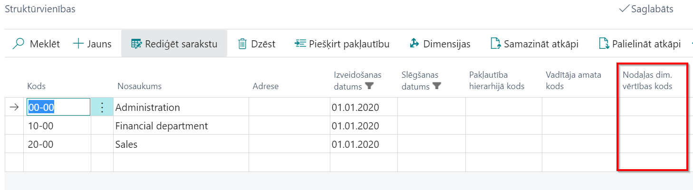
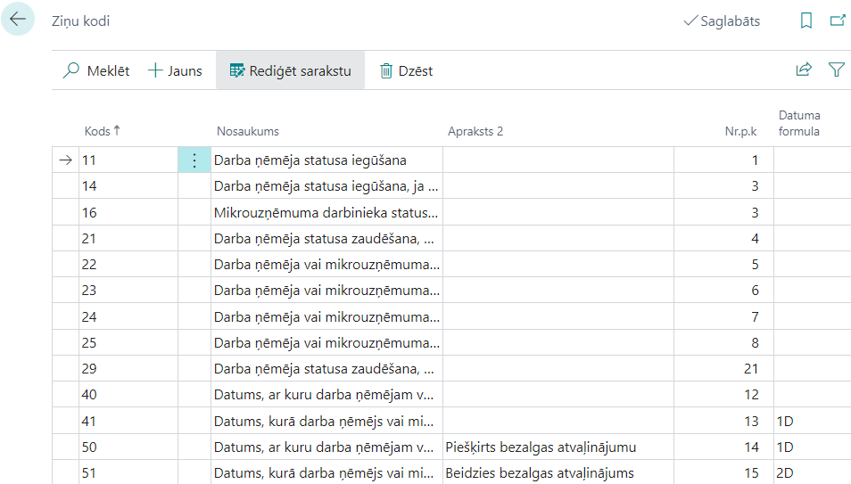
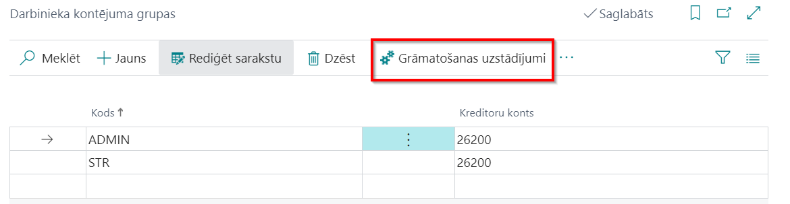
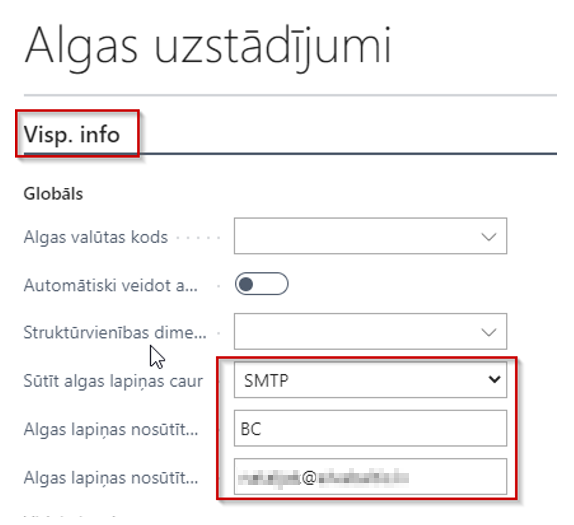

Kā sākt strādāt
Lai sāktu lietot Dynamics 365 Business Central Latvian Payroll Advanced, nav nepieciešams izvēlēties kādu specifisku lomu centru. Funkcionalitāte darbosies no jebkura lomu centra. Tomēr iesakām izmantot lomu centru LV Alga, lai sākuma lapā būtu pieejamas visas saīsnes ērtākai un ātrākai piekļuvei darbā ar algām.
Konfigurācijas pakotnes attiecināšana
Latvian Payroll Advanced lietošanai nepieciešamie pamata uzstādījumi un kodi tiek izveidoti, attiecinot konfigurācijas pakotni.
Lai ielādētu konfigurācijas pakotni, klikšķiniet uz pogas Meklēt, ierakstiet meklēšanas logā Konfigurācijas pakotnes (1) un izvēlieties no piedāvātā saraksta (2).
Konfigurācijas pakotnes loga rīkjoslā klikšķiniet uz pogām Apstrādāt (1) - Importēt pakotni (2) un izvēlieties attiecīgo pakotnes failu no jūsu failu glabātuves. Ar vienu klikšķi iezīmējiet ielādēto pakotni un noklikšķiniet uz pogām Apstrādāt (1) un Attiecināt pakotni (3).
Konfigurācijas pakotnes saturs
Konfigurācijas pakotne ievada sistēmā sekojošu informāciju:
- Numuru sērijas un to rindas
- Algu uzstādījumus
- Atvaļinājumu periodu uzstādījumus
- Atvaļinājumu papildus dienu uzstādījumus
- Statistikas atskaites Darbs-2 uzstādījumi
- Statistikas atskaites Darbs-2 uzskaites kodi
Vispārējie sistēmas uzstādījumi
Uzņēmuma informācija uzstādījumos ir obligāti aizpildāmi sekojoši lauki:
- Uzņēmuma nosaukums
- Reģistrācijas Nr.
Banku konti sadaļā ar konfigurācijas pakotni tiks ielādēta bankas konta kartiņa algu maksājumiem. Šajā kartiņā obligāti aizpildāmi sekojoši lauki:
- SWIFT kods
- IBAN
Kontu plāns sadaļā ar konfigurācijas pakotni tiks ielādēti standarta konti, kas nepieciešami algu grāmatojumiem. Nepieciešamības gadījumā šos kontus ieteicams pārnumurēt/pārsaukt, lai nevajadzētu veikt korekcijas grāmatošanas uzstādījumos.
Dimensijas sadaļā jāizveido dimensijas, kas tiks izmantotas algu uzskaitei.
Uzstādījumi
Uzstādījumi, kas attiecas uz algu aprēķināšanu ir iekļauti zem sadaļas Administrēšana, klikšķinot uz lomu centra saīsnes vai ievadot nepieciešamo uzstādījumu nosaukumu sistēmas meklētājā.
Algu dimensiju uzstādījumi
Tikai tās dimensijas, kas būs norādītās sarakstā Algu dimensiju uzstādījumi, tiks lietotas algas aprēķinos, pārējās dimensijas tiks ignorētas.
Iestatījumiem pieejami sekojoši lauki:
| Lauka nosaukums | Apraksts |
|---|---|
| Dimensijas kods | Izvēlas dimensiju no saraksta, kura tiks lietota algas aprēķinos. |
| Vērtības izcelsme | Norāda līmeni, no kurienes tiks ņemta dimensijas vērtība: a) Avots – Prombūtnes reģistrācija, Darba algas komponentes, Algas komponenšu reģistrs; b) Algas komponente – Norādītais dimensijas kods tiek ņemts no algas komponentes; c) Darbinieka amats – Norādītais dimensijas kods tiek ņemts no Darbinieku amata; d) Darbinieks – Augstākais līmenis, norādītais dimensijas kods tiek ņemts no darbinieka kartes. |
| Nelietot hierarhiju | Ja nav atzīme šajā laukā, tad norādītais dimensijas kods tiek meklēts augstākos līmeņos. Ja ir atzīme, tad tikai izvēlētajā līmenī. |
| Pieļaut tukšu vērtību | Pārbauda, vai pēc iepriekš norādītajiem uzstādījumiem dimensijas vērtība nav tukša vērtība. Ja ir atzīme šajā laukā, tad programma nedod kļūdas paziņojumu, ja nevienā no līmeņiem (konkrētā līmenī, ja ir atzīme laukā nelietot hierarhiju) dimensija nav atrasta. |
Struktūrvienības un amata dimensijas
Sistēma piedāvā iespēju pie struktūrvienības pievienot amata n-tās dimensijas. Veidojot personāla rīkojumu (par pieņemšanu, amata maiņu), norādītās noklusējuma dimensijas tiek pievienotas darbinieka amatam.
Dimensiju piešķiršana struktūrvienībai:
vai, ja ir piešķirama tikai viena dimensija, tad to var izdarīt arī pašā struktūrvienības rindā:

Dimensiju piešķiršana amatam:
Ja pie struktūrvienības norāda dimensiju vērtības un pie attiecīgās struktūrvienības amata norāda vēl citu dimensiju vērtības, tad pie darbinieka amata parāda visas (gan tās, kas bija norādītas pie struktūrvienības, gan tās, kas bija norādītas pie amata).
Tip
Nav ieteicams norādīt vienas un tās pašas dimensijas, bet ar atšķirīgām vērtībām, gan pie struktūrvienības, gan amata.
Algu uzstādījumi
Ielādējot konfigurācijas pakotni, standarta uzstādījumi jau ir aizpildīti, tomēr rekomendējam pārskatīt visus uzstādījumus atbilstoši jūsu uzņēmuma vajadzībām.
Iestatījumiem pieejami sekojoši lauki:
Cilne: Visp. info
| Lauka nosaukums | Apraksts |
|---|---|
| Algas valūtas kods | Norāda algas valūtas kodu. Gadījumā, ja algas tiek rēķinātas vietējā valūtā, tad lauks nav jāaizpilda. |
| Automātiski veidot amatu karti | Ja ir atzīme šajā laukā, tad veidojot jaunu darbinieku, automātiski veidosies arī amata karte. |
| Struktūrvienības dimensijas kods | Norāda noklusēto dimensijas kodu. |
| Sūtīt algas lapiņas caur | Norāda vedu, kā tiks sūtītas algu lapiņas – atbilstoši nepieciešamajiem uzstādījumiem. |
| Algas lapiņas nosūtītāja vārds | Norāda vārdu, kas izsūta algu lapiņas. |
| Algas lapiņas nosūtītāja e-pasts | Norāda e-pastu, caur kuru algu lapiņas tiek izsūtītas. |
| Nepārbaudīt attaisnotās promb. 12M vid. izpeļņā | Šī pazīme darbojas, ja ielikta otra pazīme “Nepilniem periodiem lietot tekošo mēnesi vid. izpeļņai”. Ja pazīme nav ielikta, tad tekošais mēnesis netiek paņemts, ja attaisnotās prombūtnes ilgums ir mazāk par 12 mēnešiem, bet gadījumā ja prombūtnes ilgums ir vairāk par 12 mēnešiem, tekošais mēnesis tiks iekļauts vidējās izpeļņas aprēķinā. |
| Nepilniem periodiem lietot tekošo mēnesi vid. izpeļņai | Iespējo, ja vidējo izpeļņu izmanto tekošā mēneša aprēķinā, situācijā, kad darbinieks nav nostrādājis pilnu periodu. |
| Vidējās apmaksas precizitāte | Norāda precizitāti (zīmes aiz komata), ar kādu vidējā izpeļņa tiks izmantota aprēķinos. |
| Vidējās izpeļņas prombūtnes kods | Prombūtnes kods vidējai izpeļņai. |
| Svētku un brīvdienu apmaksas koeficients | Koeficientu izmanto, lai aprēķinātu piemaksu par darba stundām svētku dienās un brīvdienās. |
| Nakts darba apmaksas koeficients | Koeficientu izmanto, lai aprēķinātu piemaksu par nakts darba stundām. |
| Virsstundu apmaksas koeficients | Koeficientu izmanto, lai aprēķinātu piemaksu par nostrādātajām virsstundām. |
| IIN 1. līmeņa ienākumu limits | 1. līmeņa limits. |
| IIN 2. līmeņa ienākumu limits | 2. līmeņa limits darbiniekiem, kuriem A1 sertifikāts. |
| IIN globālais bāzes kods | Tiek izmantots atvieglojumu pārejai uz citu līmeni. |
| Noklusētais kalendārs | Valsts noteiktais kalendārs 5 darba dienu nedēļai. |
| Noklusētais kalendārs 6DDN | Valsts noteiktais kalendārs 6 darba dienu nedēļai. |
| Nepārnest nepiemērotos atviegl. | Norāda, ja nevēlas nepiemērotos atvieglojumus pārnesti uz nākošo mēnešu algu aprēķiniem; Nepiemērotie atvieglojumi tiek pārnesti caur Komponenšu reģistru, kas tiek izveidots aprēķina brīdī. Ja aprēķina brīdī bija pazīme, ka nevajag pārnest nepiemērotos atvieglojumus, tad arī nebūs komponenšu reģistra ieraksta un nākamajā mēnesī tie netiks ņemti vērā. |
| Iespējotas kompensētās svētku dienu stundas | Iespējot risinājumu, ja nepieciešams kompensēt svētku dienas, kas iekrīt darba dienās, ja darbiniekam ir mēnešalga. |
| Kompens. svētku dienu stundas pieņemš./atbrīv | Darbojas kopā tikai ar ieslēgtu funkciju Iespējotas kompensētās svētku dienu stundas. Iespējot, ja nepieciešams kompensēt svētku dienas, kas iekrīt darba dienās, ja darbinieks ir pieņemts vai atbrīvots tekošajā mēnesī. |
| Bērnu kopšanas prombūtnes filtrs | Atbilstošais prombūtnes kods. |
| Prombūtnes korekcijas kods | Kods, ar kādu atrādās Algu pārrēķina rindas Prombūtnes reģistrācijā. |
| Atvaļ. dienu tips | Norāda, kā uzskaita atvaļinājuma dienas - Darba dienās vai Kalendārajās dienās. Paredzēts gadījumos, ja neizmanto atvaļinājuma periodus. |
| Atvaļ. dienu skaits vienā periodā | Norāda atvaļinājuma dienu skaitu, kas pienākas katram darbiniekam vienā periodā. |
| Atvaļ. apmaksājamo dienu skaits vienā periodā | Norāda apmaksājamo atvaļinājuma dienu skaitu, kas pienākas katram darbiniekam vienā periodā. |
| Noklusētais stundu sk. atvaļ./vid.izp. aprēķiniem | Norāda noklusēto vienas dienas stundu skaitu, kurš tiek izmantots kompensācijas aprēķinos, kā arī vid. izpeļņā. |
| Atļaut detalizētu maksājumu grāmatošanu | Atzīme šajā laukā norāda uz to, ka algu maksājums tiks grāmatots detalizēti, nevis grupēts viss vienā summā. Algu maksājumus eksportē uz maksājumu žurnālu un lietotājs var iegrāmatot ar standarta grāmatojumu par katru darbinieku atsevišķi. Tādā gadījumā virsgrāmatā var redzēt, cik katrs darbinieks saņem. Tādēļ ir paredzēta otra grāmatošanas funkcija algām, kura var sagrupēt pa dimensijām un tad iegrāmatot maksājumus. |
| Darba dev. soc. nod. konta tips | Norāda konta tipu, kurā tiks grāmatots aprēķinātais darba devēja sociālais nodoklis. |
| Darba dev. soc. nod. konta Nr. | Norāda kontu, kurā tiks grāmatots aprēķinātais darba devēja sociālais nodoklis. |
| Algas izmaksas datums | Norāda algas izmaksas datumu, kurš parādās algas saraksta virsrakstā un dara devēja ziņojumiem EDS. |
| Avansa izmaksas datums | Norāda avansa izmaksas datumu, kurš parādās avansa saraksta virsrakstā. |
| Bankas veidnes nosaukums | Norāda žurnālu, caur kuru tiks veikti algas maksājumi no bankas konta. |
| Nākamā perioda apmaksas atvilkums | Komponente, kas tiek lietota storno risinājumā. Gadījumā, ja no algas saraksta jau veikta izmaksa, tad tekošā mēneša nākamajā algu sarakstā šī izmaksa tiks uzskaitīta zem noradīta algas komponentes koda. |
| Nelietot sistēmas komp. reģistrus | Norāda, ja algu aprēķinos nevēlas lietot sistēmas radītus Komponenšu reģistra ierakstus. Gadījumā, ja ir nepieciešamas korekcijas, un ielikts ķeksis “Nelietot” , aprēķinot, tiek paradīti paziņojumi par korekcijām, bet reģistrs netiks veidots. |
| Grafiks/Uzskaite pēc noklusējuma | Ja ir ielikta atzīme šajā laukā, tad veidojot jaunu darbinieka amatu vai mainot to, automātiski aizpildās lauks Grafiks/Uzskaite. Tas nodrošina, ka attiecīgajam darbinieka amatam algas aprēķins notiek tikai secīgi pēc Grafika/Uzskaites izveidošanas. |
Cilne: Numerācija
| Lauka nosaukums | Apraksts |
|---|---|
| Algas sarakstu numuri | Norāda algu sarakstu Nr. sēriju. |
| Starpizmaksas sarakstu numuri | Norāda starpizmaksas Nr. sēriju. |
| Avansu sarakstu numuri | Norāda avansu sarakstu Nr. sēriju. |
| Storno sarakstu numuri | Norāda storno sarakstu Nr. sēriju. |
| Darbinieka amatu numuri | Norāda darbinieka amatu Nr. sēriju. |
| Komponenšu reģistru numuri | Norāda algas komponenšu reģistra Nr. sēriju. |
| Sistēmas komponenšu reģistru numuri | Norāda sistēmas komponenšu reģistru Nr. sēriju. |
| Darb. apdrošināšanas numuri | Norāda darbinieku apdrošināšanas Nr. sēriju. |
| Amatu numuri | Norāda sistēmas amatu reģistra Nr. sēriju. |
| Darbs-2 numuri | Norāda 2-Darbs atskaites numerāciju. |
| Grafiku numuri | Norāda grafiku reģistra Nr. sēriju. |
| Uzskaišu numuri | Norāda uzskaites reģistra Nr. sēriju. |
| Bankas maksājumu numuri | Norāda bankas algu maksājumu Nr. sēriju. |
| Bankas eksporta maksājumu numuri | Norāda maksājumu nr. bankas failā |
| PFPIS numuri | Norāda Paziņojuma par fiziskai personai izmaksātām summām dokumentu nr. sēriju. |
| Algas grāmatiņu importa numuri | Norāda importa Nr. sēriju. |
Cilne: Komponentes
| Lauka nosaukums | Apraksts |
|---|---|
| Avansa atvilkuma komponentes kods | Norādītā komponente no avansu saraksta ievilksies algu sarakstā kā atvilkums. |
| Starpizmaksu atvilkuma komponentes kods | Norādītā komponente no Starpizmaksu saraksta ievilksies algu sarakstā kā atvilkums. |
| Minimālās algas komponentes kods | Norāda minimālās algas komponenti. |
| Negatīvas izmaksas komponentes kods | Norāda negatīvās izmaksas komponenti. |
Cilne: Apdrošināšana
| Lauka nosaukums | Apraksts |
|---|---|
| Ar nod. neapl. apdrošināšanas kods | Jābūt norādītai atbilstošai algas komponentei. Šis uzstādījums tiek nokonfigurēts veidojot jaunu datu bāzi un nav ieteicams šo uzstādījumu modificēt bez ELVA speciālistu konsultācijas. |
| Atvilkuma apdrošināšanas kods | Jābūt norādītai atbilstošai algas komponentei. Šis uzstādījums tiek nokonfigurēts veidojot jaunu datu bāzi un nav ieteicams šo uzstādījumu modificēt bez ELVA speciālistu konsultācijas. |
| Ar nod. apl. apdrošināšanas kods | Jābūt norādītai atbilstošai algas komponentei. Šis uzstādījums tiek nokonfigurēts veidojot jaunu datu bāzi un nav ieteicams šo uzstādījumu modificēt bez ELVA speciālistu konsultācijas. |
| Apdrošināšanas algas bāzes kods | Atbilstošais algas bāzes kods. Šis uzstādījums tiek nokonfigurēts veidojot jaunu datu bāzi un nav ieteicams šo uzstādījumu modificēt bez ELVA speciālistu konsultācijas. |
| Apdrošināšanas limita procenti | Pēc likumdošanas noteiktais apdrošināšanas prēmiju summas procents no maksātājam aprēķinātās bruto darba samaksas taksācijas gadā, kuru izslēdz no maksātāju ienākumiem, par kuriem maksā algas nodokli un valsts sociālās apdrošināšanas obligātās iemaksas (bet ne vairāk, kā Apdrošināšanas limita summa).. |
| Apdrošināšanas limita summa | Pēc likumdošanas noteiktā maksimālā apdrošināšanas prēmiju summa gadā, kuru izslēdz no maksātāju ienākumiem, par kuriem maksā algas nodokli un valsts sociālās apdrošināšanas obligātās iemaksas. |
Cilne: Atskaites
| Lauka nosaukums | Apraksts |
|---|---|
| Vadītāja Nr. | Norāda personu, kas parakstīsies algu atskaitēs kā vadītājs. |
| Ziņu koda pārbaudes iesl. | Ja ir ieslēgta šī funkcija, tad aizpildot darbinieka kartiņā darbā pieņemšanas vai atbrīvošanas datumus, sistēma piedāvās ievadīt darbinieka ziņu kodu sarakstā Ziņu kodi, no kura tiek iegūta informācija EDS iesniedzama paziņojuma Ziņas par darba ņēmējiem sagatavošanai. |
| Darba laika dimensijas kods | Dimensijas kods darba laikam. |
| Simbols brīvdienai uzskaites atskaitē | Brīvdienas apzīmējums eksportā uz Excel un tabeles izdrukā. |
| Izpildītāja Nr. | Norāda personu, kas parakstīsies algu atskaitēs kā izpildītājs. |
| Iedz. ien. nodoklis aprēķina periodā | Norāda, ka atskaitē “Darba devēja ziņojums" tiek uzrādīts tekošā perioda iedzīvotāju ienākuma nodoklis. |
| Neiekļaut iedz. ien. nodokļa precizējumus | Ķeksis strādā tikai gadījumā, ja nav ielikts ķeksis “Iedz. ien. nodoklis aprēķina periodā”. |
| PFPIS noklusētais ienākumu veids | Tiek izmantots PFPIS atskaitē gadījumā, ja darbiniekam netika piemēroti atvieglojumi un netika veikts aprēķins, jo darbiniekam bija bezalgas prombūtne. Šajā gadījumā, piemērojot atvieglojumus, tiem tiks piesaistīts noklusētais ienākuma kods. |
| VSAOI atskaites ienākumu bāzes kods | Norāda ienākumu bāzi Darba devēja ziņojumam. |
| VSAOI atskaites soc. nod. bāzes kods | Norāda sociālā nodokļa bāzi Darba devēja ziņojumam. |
| VSAOI atskaites ienākumu nod. bāzes kods | Norāda IIN bāzi Darba devēja ziņojumam. |
| VSAOI atskaites riska nod. bāzes kods | Norāda riska nodevas bāzi Darba devēja ziņojumam. |
| VSAOI atskaites pensiju iem. bāzes kods | Norāda pensiju iemaksas bāzi Darba devēja ziņojumam. |
| VSAOI atskaites solid. nod. bāzes kods | Norāda solid. nodokļa bāzi Darba devēja ziņojumam. |
| Uzņēmums ir jaunuzņēmums | Pazīme priekš Darba devēja ziņojuma. |
| Profesijas koda maiņas ziņu kods | Ziņu kods atskaitēm par profesijas maiņu |
Ziņu kodi
Lai no sistēmas būtu iespējams ģenerēt atskaiti Ziņas par darba ņēmējiem, ir nepieciešams nodefinēt ziņu kodus:

Iestatījumiem pieejami sekojoši lauki:
| Lauka nosaukums | Apraksts |
|---|---|
| Kods | Ziņu kods. |
| Nosaukums | Koda nosaukums. |
| Apraksts2 | Apraksta turpinājums. |
| Nr.p.k. | Norāda secību atskaitē Ziņas par darba ņēmējiem, parasti šie numuri atbilst secībai, kāda norādīta MK noteikumos. |
PFPIS atvieglojumi
Jānorāda kodi, kas sadala PFPIS atskaiti pēc piemērotajiem atvieglojumiem. Kodi un nosaukumi ievadāmi saskaņā ar VID Metodisko materiālu Paziņojumi par fiziskai personai izmaksātajām summām un to aizpildīšanas kārtība.
Iestatījumiem pieejami sekojoši lauki:
| Lauka nosaukums | Apraksts |
|---|---|
| Kods | Papildus atvieglojuma kods. |
| Nosaukums | Papildus atvieglojuma nosaukums. |
| Bāze | Izvēlas atvieglojumu bāzi, kurā norādīti atbilstošie atvieglojumi. |
Virsstundu uzstādījumi
Lai sistēmā tiktu veikts korekts virsstundu aprēķins, ir jāsaliek sekojoši iestatījumi logā Virsstundu uzstādījumi:
| Lauka nosaukums | Apraksts |
|---|---|
| Algas tips | Izvēlas, kāds darba algas aprēķina tips tiks izmantots Virsstundu aprēķinā: a) 5 Darba dienu nedēļa; b) Summētais darba laiks. |
| Darb. kalendāra kods | Norāda kalendāru, kurš tiks izmantots virsstundu aprēķinā. |
| Sākuma mēnesis | Norāda, no kāda mēneša tiek veikts virsstundu aprēķins. Paredzēts summētajam darba laikam, ja pārskata perioda sākums atšķiras no gada sākuma. Visos pārējos gadījumos jānorāda Janvāris. |
| Datuma formula | Norāda periodu, par kuru virsstundas tiks aprēķinātas. |
| Limita tips | Norāda tipu, no kura tiks ņemta informācija par nostrādātajām stundām: a) Stundas - izvēlas, ja jānorāda stundu skaits; b) Kalendārs - par pamatu virsstundu aprēķinam tiks izmantots kalendārs. |
| Limita stundas/kalendārs | Ja ir izvēlēts tips kalendārs, tad izvēlas atbilstošo kalendāru no saraksta. Ja tips ir stundas, tad norāda stundu skaitu, kuras pārsniedzot tiks rēķinātas virsstundas. |
| Nosaukums | Brīvi ierakstāms paskaidrojums. |
| Proporcionāli | Izvēlas, ja laukā tips ir Kalendārs un virsstundas paredzēts rēķināt tikai no nostrādātā laika. Aprēķinā ņem vērā arī prombūtni un darbā pieņemšanas datumu. |
| Izmantošanas veids pēc noklusējuma * | Izvēlas: a) Apmaksa; b) Brīvdiena; c) Atvaļinājuma papilddiena. |
| Prombūtnes kods brīvdienu izmantošanai * | Norāda kodu VIRS_ATPUT. |
| Mēnešu skaits brīvdienu izmantošanai * | Norāda cik mēnešus atpakaļ vajag meklēt pieejamas virsstundas, kuras izmantos kā brīvdienu. |
| Stundu sk. dienā atvaļin. papilddienai * | Norāda virsstundu skaitu lai piešķirt darbiniekam vienu atvaļinājuma papilddienu. |
*Lauki paredzēti virsstundu kompensēšanai. Detalizēts procesa apraksts nodaļā Virsstundas kompensācijas ar atpūtas laiku.
Darbinieka grāmatošanas grupas
Darbinieka grāmatošanas grupas tiek lietotas, ja algas aprēķinā iegūtās summas jādala pa dažādiem virsgrāmatas kontiem (piemēram, administrācijas algas izmaksas un pārdošanas algas izmaksas).

Iestatījumiem pieejami sekojoši lauki:
| Lauka nosaukums | Apraksts |
|---|---|
| Kods | Darbinieka grāmatošanas grupas kods. |
| Maksājumu konts | Norāda Virsgrāmatas kontu, kas jālieto, grāmatojot kreditoru parādus darbiniekiem šajā kontējuma grupā. |
Lai apskatītu visus algu grāmatojumus vienā lapā, jānospiež poga Grāmatošanas uzstādījumi.
| Lauka nosaukums | Apraksts |
|---|---|
| Darbinieka grām. grupas kods | Darbinieka grāmatošanas grupas kods. |
| Algas komponentes kods | Norāda kādai algas komponentei ir atspoguļoti grāmatojumi. |
| Komponentes nosaukums | Algas komponentes nosaukums. |
| Konta tips | Lauku Konta Nr. un DDSN konta Nr. konta tips. |
| Konta Nr. | Konta numurs. |
| DDSN Konta nr. | Darba devēja sociālā nodokļa konta numurs. |
| Algas norēķinu konta Nr. | Korespondējošais konts. Nav rediģējams lauks, tikai informatīva nozīme. |
| Grāmatošanas grupas konta zīme | Konta Nr. un DDSN konta Nr. puse: debets vai kredīts. Nav rediģējams lauks, tikai informatīva nozīme. |
Amatu klasifikators
Sistēmā var izveidot amatu klasifikatoru, kuram var piesaistīt konkrēto profesiju klasifikatoru. Amati nav hierarhiski sagrupēti, tas ir, nav noteikta pakļautība.
Klikšķinot uz Apstrādāt , katrai amata kartiņā var, identificēt amata pienākumu veikšanas Riska faktorus, kā arī noteikt Instruktāžas. Ja sistēmā tiek labota informācija par profesijas kodu un struktūrvienības kodu, tad, lai šīs izmaiņas parādītos arī darbinieka kartiņā, amata kartē ir jāaktivizē funkcija Atjaunot darbinieku amatus.
Amata kartiņai var piesaistīt dimensijas, klikšķinot uz Saistītās un izvēloties funkciju Dimensijas.
Amata kartiņā pieejami sekojoši lauki:
| Lauka nosaukums | Apraksts |
|---|---|
| Kods | Jaunās amata vietas kods. |
| Nosaukums | Amata nosaukums. |
| Profesijas kods | Kods no Darbinieku statistikas grupas. |
| Struktūrvienības kods | Kods no Struktūrvienības saraksta. Struktūrvienības kodu mainīt kartē nav iespējams, tāpēc tam jābūt korekti ievadītam sākotnēji. |
| Struktūrvienības apraksts | Apraksts no Struktūrvienības saraksta. |
| Kopējās slodzes | Slodzes, kas ir paredzētas šim amatam kopā. |
| Patreizējās slodzes | Cik amata slodzes uzņēmumā jau ir aizņemtas. |
| Patreizējais darbinieku skaits | Darbinieku skaits, kas ir nodarbināti konkrētā amatā. |
| Vakantās slodzes | Cik slodzes vēl ir vakantas šim amatam. |
| Izveidošanas datums | Amata izveidošanas datums. |
| Slēgšanas datums | Amata slēgšanas datums. |
| Amata alga | Informatīvs lauks. |
| Atvaļinājuma dienas | Definēt, cik ikgadējā atvaļinājuma dienas pienākas šim amatam. |
| Papildatvaļinājuma dienas | Definēt, cik papildatvaļinājuma dienas pienākas šim amatam. |
| Darba laiks nav nosakāms | Atzīmē, ja amatam darba laiks nav nosakāms un tiek pakārtots uzņēmuma vajadzībām. |
| Darba līguma veidne | Var piesaistīt amatam līguma veidni. |
Struktūrvienības
Sistēmā iespējams uzturēt strukturētu informāciju par uzņēmuma struktūrvienībām. Gan aktuālu, gan arī vēsturisku, jo struktūrvienības sistēmā netiek dzēstas, bet gan slēgtas. Tabula Struktūrvienības satur sekojošus laukus:
- Kods – struktūrvienības kods, ko definē lietotājs.
- Nosaukums;
- Adrese – struktūrvienības piesaistītā faktiskās atrašanās vietas adrese;
- Izveidošanas datums – datums, kad struktūrvienība ir izveidota;
- Slēgšanas datums – datums, kad struktūrvienība ir slēgta;
- Pakļautība hierarhijā kods – struktūrvienības kods, kurai struktūrvienība ir pakļauta
- Vadītāja amata kods;
- Nodaļas dim. vērtības kods - Struktūrvienības dimensijas vērtības kods (tiek izmantota dimensija, kas nodefinēta Personāla uzstādījumos) no standarta dimensiju klasifikatora.
Lai nodrošinātu struktūrvienību hierarhiju, tiek kombinētas kārtošanas un atkāpju metodes. Tātad viena struktūrvienība ir pakļauta otrai struktūrvienībai, ja tā atrodas pēc galvenās struktūrvienības un ir ar vienu līmeni lielāku atkāpi. Atkarībā no struktūrvienību atkāpju dziļuma un struktūrvienību skaita, tiek sastādīts struktūrvienības kods. Struktūrvienības atkāpes tiek veidotas ar podziņu palīdzību Struktūrvienības tabulā. Piemēram, dalot kodu trijās daļās „00-00-00”, pirmā daļa ir augstākās struktūrvienības līmeņa kods, otrā un trešā attiecīgi nākamās. Katrā līmenī pakļautībā zem vienas un tās pašas struktūrvienības ir iespējams izveidot 100 struktūrvienības.
Piemēram:
00-00-00 Vadība – 1. līmenis;
00-10-00 Finanšu daļa – 2. līmenis;
00-10-10 Grāmatvedība – 3. līmenis.
Šādā veidā, izmantojot kodus, tiek nodrošināta kārtošanas metode. Papildus tiek veidotas atkāpes atbilstoši līmenim.
Pensionēšanas vecums
Lai varētu atlasīt darbiniekus, kuriem iestājas pensionēšanas vecums, sistēmā ir jānodefinē pensionēšanas vecums.
Iestatījumiem pieejami sekojoši lauki:
| Lauka nosaukums | Apraksts |
|---|---|
| No datuma | Norāda, no kura datuma ir spēkā šie noteikumi. |
| Dzimums | Norāda dzimumu. |
| Pensionēšanās vecums | Norāda vecumu, ar kuru iestājas pensionēšanas vecums. |
Sociālā statusa kodi
Lai sistēmā tiktu korekti aizpildīta atskaite Ziņojums par valsts sociālās apdrošināšanas obligātām iemaksām, ir jānodefinē sekojoši uzstādījumi. Parasti ELVA speciālisti sagatavo uzstādījumus pirms lietotāji sāk lietot sistēmu, bet zinošāki lietotāji var šos uzstādījumus papildināt, ja ir nepieciešams:
Iestatījumiem pieejami sekojoši lauki:
| Lauka nosaukums | Apraksts |
|---|---|
| Kods | Darba ņēmēju grupas kods. |
| Nosaukums | Apraksts. |
| Noklusētais statuss | Veidojot jaunu darbinieka kartiņu, šis darba ņēmēju grupas kods tiks ielikts pēc noklusējuma. |
| XML SAMStat | Uzstādījumi saskaņā ar dokumentu Elektroniski iesniedzamo failu formāti, ko var atrast Valsts ieņēmuma dienesta mājas lapā www.vid.gov.lv. |
| XML DarbaVeids | Uzstādījumi saskaņā ar dokumentu Elektroniski iesniedzamo failu formāti, ko var atrast Valsts ieņēmuma dienesta mājas lapā www.vid.gov.lv. |
| XML Tab | Norāda, kurā sadaļā ir jānorāda dati par konkrēto sociālo statusu. |
| Algas grāmatiņas importa pensionāra tips | Tiek ņemts vērā, importējot nodokļu grāmatiņas. |
| Algas grāmatiņas importa apraksts | Tiek ņemts vērā, importējot nodokļu grāmatiņas. |
Algu banku uzstādījumi
Lai no sistēmas varētu eksportēt algu maksājumus, ir jānodefinē banku uzstādījumi:
Iestatījumiem pieejami sekojoši lauki:
| Lauka nosaukums | Apraksts |
|---|---|
| Algu bankas konta Nr. | Tiek izvēlēts algu bankas konts. |
| Nosaukums | Brīvi definējams nosaukums. |
| Saglabājamā faila tips | Visbiežāk lietotais ir SEPA (xml formāts). |
| Faila ceļš | Ja tiek lietots FIDAVISTA tips, tad nav jānorāda. Ja lieto txt tipu, tad ir jānorāda mape, kurā šis fails tiks saglabāts. |
| Atsevišķi maksājumi | Jāatzīmē, ja nepieciešams sūtīt algu maksājumu par katru darbinieku atsevišķi kā atsevišķu dokumentu. |
| Grupēt pēc Darbinieka Nr. | Jāatzīmē, ja tiek veikta izmaksa vienam darbiniekam no vairākiem sarakstiem, tad bankas failā pēc darbinieka nr. tiek veidots viens ieraksts. |
Vēl viens no obligātiem nosacījumiem - jābūt numuru sērijai SEPA. Lai izveidotu SEPA numuru sēriju, katalogā jāizveido jauns kods SEPA, jāaizpilda apraksts un jāpiešķir sākuma Nr. un beigu Nr. Kā arī jāieliek ķeksis Numuri pēc noklusējuma.
Algu analīzes veidnes
Sistēmā var nodefinēt veidnes, ko izmantot algu analizēšanai.
Šie uzstādījumi ir nepieciešami atskaitei Algu analīze:
Iestatījumiem pieejami sekojoši lauki:
| Lauka nosaukums | Apraksts |
|---|---|
| Kods | Brīvi nodefinēts kods. |
| Nosaukums | Apraksts. |
| Kolonnu vērtības | Kolonnās iespējams kārtot datus pēc komponentes tipa, aprēķina vai perioda mēneša. |
| Sadaļa Rindas | Izvēlas, kādus datus vēlas norādīt rindās: Tips (ienākums, atvieglojums, atvilkums utt.); Kods (algas komponentes kods); Dimensija; Darbinieks. |
Algu aprēķina uzstādījumi
Nodaļā Administrēšana ir iekļautas vajadzīgās kartiņas un formas Algas aprēķina vajadzībām.
Algas komponentes
Tip
Parasti lielākā daļa no šīm komponentēm ir kopīga visiem uzņēmumiem un tās tiek sagatavotas iepriekš, veidojot jaunu bāzi klientam. Tāpēc nav ieteicams šīs vērtības dzēst un modificēt bez konsultācijas ar ELVA konsultantiem.
Algas aprēķins tiek veidots no dažādām algas komponentēm – ienākumiem, atvieglojumiem, nodokļiem. Vienkāršākai bāžu uzturēšanai ir paredzētas divas pogas: Saistītās bāzes pēc tipa (1) un Saistītās bāzes pēc koda (2). Tādā veidā pastāv iespēja ātri atlasīt bāzes, kurās tiek izmantota algas komponente.
Iestatījumiem pieejami sekojoši lauki:
Cilne: Visp. info
| Lauka nosaukums | Apraksts |
|---|---|
| Kods | Brīvi definēts kods. |
| Tips | Izvēlas no saraksta atbilstošo tipu. |
| Nosaukums | Brīvi definēts komponentes nosaukums. |
| Prioritāte | Norāda konkrētās komponentes vietu algas aprēķināšanas darbību ķēdē – jo mazāks skaitlis, jo augstāka prioritāte. Tādējādi šī komponente ātrāk tiks iesaistīta algas aprēķinā. Veidojot jaunu algas komponenti, prioritāte iekrīt automātiski, vēlams pašiem bez vajadzības nemainīt. |
| Aprēķina veids | Jāizvēlas, kā komponente tiks rēķināta – Proporcionāli nostrādātām dienām, Proporcionāli nostrādātām stundām, Proporcionāli kalendārām dienām, Stundu, Dienu, Gabaldarbs, Neapliekamais limits (uzkrājošs), Neapliekamais limits (neuzkrājošs), Avanss. |
| Daudzuma tips | Nepieciešams noradīt kādas mērvienības jāizmanto, aprēķinot virsstundas tabelē. |
| Derīgs līdz | Līdz kādam datumam komponente ir spēkā. |
| Derīguma skaidrojums | Brīvi definējams teksts, kurš tiks atspoguļots, aprēķinot algas, kļūdas paziņojumā gadījumā, ja komponente jau nav spēkā. |
| Soc. statusa kods | Norāda pie sociālā nodokļa komponentes atbilstošu sociālā statusa kodu. |
| Noklusētā darbinieka komponente | Atzīme, vai šī komponente aizpildās automātiski, veidojot algas komponentes darbinieka kartiņā. |
| Apgādājamo skaits | Tiek aizpildīts pie atvieglojumu par apgādājamajiem komponentes – ieliek atbilstošo apgādājamo skaitu. |
| Invaliditātes grupa | Tiek aizpildīts pie atvieglojumu par invaliditāti komponentes – aizpilda atbilstošu grupu. |
| 1. globālās dimensijas kods | Ja nepieciešams, norāda 1. globālo dimensiju algas komponentei. |
| 2. globālās dimensijas kods | Ja nepieciešams, norāda 1. globālo dimensiju algas komponentei. |
| Nedrukāt algas lapiņā | Norāda, ka informācija par šo algas komponenti netiks drukāta algas lapiņā. |
Cilne: Papild. info
| Lauka nosaukums | Apraksts |
|---|---|
| Neto summa | Ievieto atzīmi, ja aprēķinā tiek izmantota neto summa. Gadījumā, ja neto komponentei ir reģistrēta summa ar mīnuss zīmi, šī summa tiks uzskatīta par bruto summu. |
| Virsstundu algas komponente | Norāda piesaistīto Virsstundu algas komponenti. |
| Svētku stundu algas komponente | Norāda piesaistīto Svētku stundu algas komponenti. |
| Nakts stundu algas komponente | Norāda, piesaistīto Nakts stundu algas komponenti. |
| Kompensējamo stundu komponentes kods | Norāda algas komponenti, kura tiek izmantota algas aprēķinos ar stundas likmi, kompensējot svētku stundas, kuras iekrīt darbiniekam normālajā darba laikā un šajā dienā darbinieks neveica darbu. |
| Gada limita pārsniegtās summas komp. kods | Norāda algas komponentes kodu, kurš tiks izmantots algu aprēķinā gadījumā, ja pārsniegts šīs komponentes limits. |
| Atvieglojumu pieejama summa | Bāze, kura definē atvieglojumu summu dotai komponentei. |
| Nepiemēr. atviegloj. komponentes kods | Norāda algas komponentes kodu, kurš tiks piemērots nepiemēroto atvieglojumu pārnešanai uz nākošo mēnešu algu aprēķiniem. |
| IIN 2. līmeņa komponentes kods | 2. līmeņa IIN bāzes kods. |
| IIN 3. līmeņa komponentes kods | 3. līmeņa IIN bāzes kods. |
| Vienmēr lietot aprēķina periodu | Norāda, ja ir nepieciešams IIN aprēķinam lietot tekošo aprēķina periodu. |
| Dalīt atbilstoši saistītajām komponentēm | Komponentes veidojas no uzstādījumiem (bāzes summām) un dalās atbilstoši komponentēm, kuras ir bāzes summās. |
| Pamatalga | Norāda kura komponente tiek atzīta kā pamatalgas komponente. |
| Svētku dienu apmaksa atvaļ. laikā | ievieto atzīmi pie pamatalgas komponentes, ja vēlas, lai tiktu aprēķināta samaksa par svētku dienām (kuras iekrīt darbinieka darba dienā) atvaļinājuma laikā. Ja atvaļinājuma laikā iekrīt svētku diena, tad sistēma par šīm dienām samazina atvaļinājuma izmantoto dienu skaitu. |
| Svētku dienas brīvdienā vidējā apmaksa | Atzīmējot šo lauku pie pamatalgas komponentes, ja darbinieka brīvdienā “iekrīt” svētku diena, kas pēc valstī noteiktā kalendāra “iekrīt” darba dienā – tad par šo dienu tiek aprēķināta vidējā izpeļņa. Lai par šo dienu aprēķinātu vidējo izpeļņu, darbinieka kartiņā sadaļā Algas komponentes jābūt atzīmei pie Apmaksāt svētku stundas. |
| Netiek grāmatota uz V/G | Norāda, ka atbilstošās komponentes dati netiks grāmatoti uz virsgrāmatu. |
| Algas norēķinu konts | Norāda atbilstošo virsgrāmatas kontu, kurā tiks grāmatoti Norēķini par darba algu. |
| Grāmatošanas grupas konta zīme | Norāda grāmatošanas grupas pusi: debets vai kredīts. |
| Iekļaut nulles summu | Ieslēdz, ja jāveido algas rindu ar 0 summu (nav iespējas ieturēt summu, bet pastāv iespēja, ka lietotājs koriģēs atvilkuma summu). Ģenerēt rindu vajag, lai būtu iespēja pārskaitīt naudu trešajām pusēm. |
Cilne: Grāmatošana
| Lauka nosaukums | Apraksts |
|---|---|
| Darbinieka grām. grupas kods | Izvēlas no saraksta, uz kuru grupu attiecas šī komponente. |
| Konta tips | Iespējamie varianti : virsgrāmatas konts; piegādātājs vai klients. |
| Konta Nr. | Darba algas konta Nr. izvēlas no saraksta (vai piegādātāju/klientu, ja tips ir piegādātājs/klients). |
| DDSN Konta Nr. | Norāda Darba dev.soc.nod. izmaksu Konta Nr. DDSN var grāmatot dažādos izmaksu kontos, kas norādīti katrai darbinieka grāmatošanas grupai. |
Cilne: Uzstādījumi
| Lauka nosaukums | Apraksts |
|---|---|
| No datuma | Norāda, no kura datuma šī vērtība ir spēkā. |
| Vērtība | Norāda vērtību, ja tā ir konstanta. |
| Aprēķināt pēc | Norāda vai ievadītā vērtība būs summa vai % |
| Bāze | Ja ir izvēlēti %, tad norāda bāzi, no kuras (bāzes) summas tiks rēķināti %. |
| Bāzes gada summas limits | Tiek norādīts limits, pēc kura pārsniegšanas netiek veikti aprēķini. |
| Nosaukums | Brīvi aizpildāms lauks. |
Bāzes
Bāzes summas ir uzstādījumi, kuri nosaka dažādu algas sastāvdaļu aprēķinu - atvaļinājumu, slimības naudu, kā arī dažu atskaišu (Paziņojums par algas nodokli, statistika) aprēķināšanas algoritmus. Šīs summas var definēt pēc vajadzības.
Iestatījumiem pieejami sekojoši lauki:
Cilne: Visp. info
| Lauka nosaukums | Apraksts |
|---|---|
| Bāze | Brīvi definēts kods. |
| Nosaukums | Brīvi izvēlēts nosaukums. |
| Saistītās komponentes kods | Šī funkcionalitāte paredzēta paplašinātai datu filtrēšanai. Ja bāzei tiek norādīts Saistītās komponentes kods, tad no algas komponenšu rindām tiek skaitītas tikai rindas, kur komponentes kods vai saistītās komponentes kods sakrīt ar bāzes summas saistītās komponentes kodu. Saistītai komponentei ir ierobežojumi (PFPIS korektai aizpildīšanai), tāpēc obligāti konsultēties ar ELVA konsultantiem. |
| IIN līmeņa filtrs | Ja ir izvēlēti %, tad norāda bāzi, no kuras (bāzes) summas tiks rēķināti %. |
Cilne: Uzstādījumi
| Tabulas nosaukums | Apraksts |
|---|---|
| + Tips | Norāda komponenšu tipus, kuri tiks pieskaitīti bāzes summas aprēķinā. |
| - Tips | Norāda komponentes tipus, kuri tiks atņemti no bāzes summas. |
| + Kods | Norāda konkrētas komponentes, kuras tiks pieskaitītas bāzes summas aprēķinam. |
| - Kods | Norāda komponentes, kuras tiks atņemtas bāzes summas aprēķinā. |
Papildus katrā tabulā pie komponentes ir iespējams norādīt datumus no kura un līdz kuram aprēķinā darbojas attiecīgā komponente vai komponentes tips. Šie dati saglabājas vēsturē.
Prombūtnes iemesli
Lai reģistrētu prombūtni, nepieciešams Neierašanās iemesla kods. Visi neierašanās iemeslu kodi tiek sākotnēji importēti sistēmā ar konfigurācijas pakotnes starpniecību un tie ir apkopoti sarakstā Prombūtnes iemesli. Koda kartiņu var atvērt ieklikšķinot nepieciešamā koda rindiņā un nospiežot rīkjoslā uz pogām Darbības - Jauns dokuments - Karte.
Prombūtņu iemesla kodus un to uzstādījumus ieteicams patstāvīgi nemainīt.
Iestatījumiem pieejami sekojoši lauki:
Cilne: Visp. info
| Lauka nosaukums | Apraksts |
|---|---|
| Kods | Brīvi definēts prombūtnes kods. |
| Apraksts | Prombūtnes apraksts. |
| Mērvienības kods | Izvēlas no mērvienību klasifikatora. |
| Kopā neierašanās (bāze) | Sistēma uzrāda, cik kopā ir reģistrēta šī prombūtne. Ņemot vērā ka tas ir standarta Microsoft lauks, kurš nav uzturēts, vienmēr rāda nulli. |
| Pēc nokl. veidot algas apmaksu | Aprēķināt algu pirms prombūtnes, izveidojot prombūtnes reģistrā prombūtni ar atbilstošu prombūtnes kodu (prombūtnes kods norādīts Algu uzstādījumi). |
Cilne: Algas
| Lauka nosaukums | Apraksts |
|---|---|
| Neattaisnota prombūtne | Neattaisnotas prombūtnes pazīme. |
| Algas aprēķina veids | Izvēlas no saraksta, kādā veidā tiek aprēķināta prombūtne: 1. Vidējā apmaksa – aprēķina periodu vispirms ņem iepriekšējos 6 mēn., ja nav, tad iepriekšējos 12 mēn. Ja arī nav, tad programma pārbauda Algu uzstādījumos, vai ir atzīme laukā Nepilniem mēnešiem lietot tekošo mēnesi vid. izpeļņai. Ja šajā laukā nav atzīmes, tad rēķina vidējo no minimālās algas; 2. Saglabāta alga (Cita komponente) – par izvēlēto periodu saglabās aprēķināto pamatalgu, summu izdalot citā algas komponentē; 3. Saglabāta alga – par izvēlēto periodu nekas nemainās pamatalgas aprēķinā (piem.: attaisnota prombūtne); 4. Iepr. apmaksa – izmaksā pamatalgu Starpizmaksās par izvēlēto periodu (atvaļinājums uz priekšu); 5. Bez algas – par izvēlēto periodu neaprēķina algu (piem.: bezalgas atvaļinājums, neattaisnota neierašanās); 6. Bez atvieglojumiem – Neaprēķina algu un atvieglojumus (piem.: B lapas); 7. Tukšums – ignorē algu aprēķinos. |
| Algas komponentes kods | Norāda atbilstošo algas komponenti. |
| Nākamā perioda algas komp. kods | Norāda komponenti, ja samaksa par nākamo periodu tiek izdalīta citā komponentē. |
| Kalendāro dienu ierobežojums | Norāda prombūtnes iemesla dienu skaitu (piem. slimības lapas, komandējumi), lai brīdinātu par ierobežojumu pārsniegšanu. |
| Samazināta likme | Norāda samazinātās likmes pa dienām, (piem.: kādā veidā tiek apmaksātas slimības lapas). Klikšķiniet uz lauka linku, lai iestatītu. |
| Piespiedu kalendāra kods | Izvēlas noklusēto kalendāru, pēc kura tiks veikts aprēķins konkrētai prombūtnei. |
| Piespiedu kalendāra kods 6DDN | Izvēlas noklusēto kalendāru, pēc kura tiks veikts aprēķins konkrētai prombūtnei pēc sešu darba dienu kalendāra. |
| Lietot kalendārās dienas | Norāda prombūtnes aprēķina veidu pa dienām (periods): - Darba diena; - Kalendārā diena; - Ar roku - dienu skaits nav atkarīgs no perioda. |
| Atvieglojumi aprēķina periodā | Atzīme laukā norāda, ka atvieglojumi būs šajā mēnesī. Ja atzīmes nav, tad tie tiks pārnesti arī uz priekšu. (piem.: gari atvaļinājumi skolotājiem). |
| Iekļaut faktiskajā darba laikā | Ja ir atzīme šajā laukā, tad tiek uztvertas kā faktiski nostrādātās dienas (piem.: komandējums). |
| Aprēķina prioritāte | Norāda prombūtnes iemesla kārtas skaitli algas aprēķināšanas darbību ķēdē - jo mazāks skaitlis, jo augstāka prioritāte. Prioritāti var norādīt gan algas komponentēm, gan arī prombūtnes iemesliem. Ja algas komponente nāk no prombūtnes ieraksta (atval. komp.), tad prioritāte tiek ņemta no prombūtnes iemesla. |
| Vidējā izpeļņa pa stundām | Pastāv iespēja izvēlēties: tukšums, tikai SDL ( summētajam darba laikam), visiem.. |
| Grāmatot uz nākamajiem periodiem | Iespējo, ja pārejošās prombūtnes nākamā perioda daļa tiek grāmatota uz nākamā perioda izdevumiem. |
| G/U Kods | Norāda brīvi izvēlētu kodu, kas būs apzīmējums šim prombūtnes veidam tabeles izdrukā. |
| Krāsa tabeles izdrukā | Izvēlas krāsu, ar kādu marķētas prombūtnes dienas tabeles izdrukā. |
| Brīvdiena saglabājot darba algu | Tiek izmantota, ja darbiniekam iedota brīvdiena, kura jāapmaksā pēc principa “saglabājot darba algu”, bet neiekļaut faktiskajā laikā (piem.: donora dienas). Ja iespējots, tad lauka Algas aprēķina veids vērtībai ir jābūt Vidējā apmaksa. |
| Nekompensēt svētku dienu stundas | Iespējo, ja vēlas, lai prombūtnes periodā iekļautās svētku dienas, kas iekrīt darba dienā, netiktu kompensēšanai. |
| Neapmaksāt kompensējamās svētku dienu stundas | Iespējo, ja vēlas, lai prombūtnes periodā iekļautās svētku dienas netiktu pievienotas pie apmaksājamām dienām kopā ar pamatalgu. |
| Samazina apliekamo apdrošin. summu | Norāda ka šī prombūtne samazina apdrošināšanas apliekamo ar nodokļiem summu, noslēdzot gadu. |
| Iespēja izmainīt grafiku promb. laikā | Ja iespējots, ievadot prombūtnes kodu, sistēma paradīs plānoto darba grafiku. Nepieciešamības gadījumā var izlabot darba stundas, kuras jāapmaksā. |
| Prombūtnes sāk. ziņu kods | Norāda ziņu kodu, kāds tiks atspoguļots atskaitē Ziņas par darba ņēmējiem saistībā ar prombūtnes sākumu. Darbinieka ziņu kods sistēmā aizpildīsies pēc prombūtnes sākuma datuma ievadīšanas. |
| Darba atsākšanas ziņu kods | Norāda ziņu kodu, kāds tiks atspoguļots atskaitē Ziņas par darba ņēmējiem saistībā ar prombūtnes beigām. Darbinieka ziņu kods sistēmā aizpildīsies pēc prombūtnes beigu datuma ievadīšanas. |
Cilne: Atvaļinājumi
| Lauka nosaukums | Apraksts |
|---|---|
| Ietekme uz atvaļinājumu | Norāda prombūtnes ietekmi uz ikgadējo atvaļinājumu atlikumu. |
| Atvaļinājuma kompensācija | Atvaļinājuma kompensācijas pazīme. Pielietota Atvaļinājuma kompensācijas koda kartiņā. |
| Dienu skaits/slieksnis | Nosaka dienu skaita/sliekšņa apmēru. |
| Samazināt ieskaitot slieksni | Iespējo, ja komponente samazinās ieskaitot slieksni. |
| Papildatvaļinājums | Iespējo, ja komponente nosaka papildatvaļinājumu. |
Darba laika kalendāri
Kalendārs ir visu aprēķinu pamatā. Katrai darbinieka amata kartei ir jāpievieno darba laika kalendāra kods (DLK). Kalendārs tiek izmantots, lai aprēķinātu plānotās darba dienas un stundas mēnesī, kā arī darba dienu un stundu aprēķinos - gadījumos, kad nelieto individuālos grafikus un uzskaiti.
Iestatījumiem pieejami sekojoši lauki:
Cilne: Visp. info
| Lauka nosaukums | Apraksts |
|---|---|
| Kods | Brīvi definēts kods. |
| Nosaukums | Brīvi izvēlēts nosaukums. |
| Svētku kalendāra kods | Svētku kalendārs, kas ir piesaistīts konkrētam darba laika kalendāram. |
| Svētku kalendārs | Atzīme, ka šis kalendārs ir svētku kalendārs (tikai svētku kalendāriem). |
| Darbs arī brīvdienās | Atzīmē, ka darbinieki strādā arī brīvdienās. |
| Cikla kalendārs | Atzīme, ja darba laika kalendārs ir veidots kā cikla kalendārs. |
| Cikla sākuma datums | Nodefinē cikla kalendāra pirmo dienu. |
Cilne: Kalendāra ieraksti
Kalendāra ierakstos tiek atspoguļota informācija par katru dienu, ņemot vērā piesaistīto svētku dienu kalendāru. Ja pamata kalendāram virsrakstā ir norādīts Svētku kalendārs, tad visas svētku dienas attiecas arī uz šo kalendāru. Īpašas izmaiņas var izdarīt katrā kalendārā atsevišķi - pārcelt konkrētas darba dienas, saīsināt pirmssvētku dienu stundas, norādot konkrētus datumus. Gadījumā, ja vajadzētu kompensēt svētku dienu, kura iekrīt normālajā darba nedēļā, šo informāciju var reģistrēt cilnē Kalendāra izmaiņu apakšforma.
Cilne: Kalendāra izmaiņu apakšforma
| Lauka nosaukums | Apraksts |
|---|---|
| Periodiskums | Gada periods (parasti izmanto svētku kalendāriem), Nedēļas periods vai Cikls. |
| Datums | Ja nepieciešams, norāda konkrētu datumu (parasti izmanto svētku kalendāriem). |
| Diena | Norāda nedēļas dienas nosaukumu. |
| Cikla kārtas numurs | Ja periodiskums ir Cikls, tad norāda cikla kārtas Nr. |
| Nosaukums | Brīvi izvēlēts apraksts. |
| Brīvdiena | Atzīme, vai konkrētā diena ir brīvdiena. |
| Svētku diena | Atzīme, vai konkrētā diena ir svētku diena. |
| Darba stundas | Norāda, cik darba stundas ir konkrētā dienā. |
| Nakts stundas | Norāda, cik nakts stundas ir konkrētā dienā. |
| Kompensējamās stundas | Norāda, cik stundas tiks ņemtas vērā, aprēķinot svētku dienas kompensāciju, kā arī ja svētku diena iekrīt darbiniekam noteiktajā darba dienā un darbinieks neveic darbu šajās svētku dienās. |
Šajā cilnē ievada iknedēļas darba stundu skaitu, kas atkārtojas katru nedēļu un nosaka vispārējo kalendāra plānoto darba stundu uzbūvi. Papildus atsevišķi jaunā rindiņā, norādot datumu, ir jāsavada dienas, kurām atšķiras darba dienas no parastas darba nedēļas, piemēram, pirmssvētku dienas un pārceltās darba dienas. Gadījumā, ja svētku diena pārcelta uz citu dienu (piemēram, 18. novembris vai 4. maijs), tad šai informācijai jābūt ievadītai šajā cilnē atsevišķā ierakstā ar tipu Brīvdiena un kompensējamām stundām jābūt pievienotām.
Cilne: Kalendāra gadu apakšforma
Tiek noradīts gads un vidējais stundu skaits mēnesī. Gadījumā, ja darbiniekam ir summētais darba laiks un pamatalga proporcionāli stundām, stundas likmes aprēķinam tiek ņemts vērā vidējais stundu skaits mēnesī. Šī likme tiek izmantota nakts stundām, virsstundām, svētku stundām, svētku dienu/stundu kompensācijām.
Svētku dienu kalendāri
Sistēma veido standarta svētku kalendāru ar svētku dienām, kas sākotnēji iestatītas un atkārtojas katru gadu vienā un tajā pašā datumā (piemēram, Jāņi, Ziemassvētki, utt.). Svētku dienas, kas katru gadu neatkārtojas vienā un tajā pašā datumā (piemēram, Lieldienas, Mātes diena, utt.), kā arī pārceltās svētku dienas, ir jāievada katru gadu no jauna, precizējot datumu.
Iestatījumiem pieejami sekojoši lauki:
Cilne: Visp. info
Tiek aizpildīti tikai lauki Kods un Nosaukums, kā arī ielikta pazīme Svētku kalendārs . Pārējie šīs cilnes lauki ir neaktīvi, un sistēma tos aizpilda pati.
Cilne: Kalendāra ieraksti
Kalendāra ieraksti atspoguļo informāciju par katru gada dienu, ņemot vērā visas veiktās izmaiņas.
Cilne: Kalendāra izmaiņu apakšforma
Ja svētku dienas atkārtojas ik gadu vienos un tajos pašos datumos, tad periodiskumu izvēlas Gada periods un saliek attiecīgos uzstādījumus. Ja svētku dienas neatkārtojas ik gadu vienos un tajos pašos datumos, tad lauku periodiskums atstāj tukšu, bet ievada datumu, un ieliek ķeksi pie Brīvdiena un/vai Svētku diena - atbilstoši svētku dienas specifikai.
PFPIS ienākumu veidi
PFPIS ienākumu veidi tiek definēti saskaņā ar VID Metodisko materiālu Paziņojumi par fiziskai personai izmaksātajām summām un to aizpildīšanas kārtība.
PFPIS ienākumu veida karte
Iestatījumiem pieejami sekojoši lauki:
Cilne: Visp. info
| Lauka nosaukums | Apraksts |
|---|---|
| Kods | Ienākuma veida kods no VID metodiskajiem norādījumiem. |
| Perioda garums | Gads vai mēnesis. |
| Perioda nobīde | Norāda vai ir nobīde, ja izmaksa atšķiras no aprēķina perioda: Bez nobīdes; -1 Mēnesis (piemēram, PFPIS sarakstā par augustu tiks atrādīti fiziskajām personām aprēķinātie ienākumi par jūliju); -2 Mēneši. |
| Lietot atvieglojumus | Ja ir atzīme šajā laukā, tad norāda, ka attiecīgajam kodam vajag lietot atvieglojumus. |
| Ien. veida nosaukums | Nosaukumu ievada saskaņā ar Metodisko materiālu. |
| Tikai uzņēmuma līguma darbinieki | Atzīmē, ka attiecīgajā kodā iekļauj tikai uzņ.līg.darb. |
| Nerādīt nerezidentus | Ja ir atzīme šajā laukā, tad netiks rādīti nerezidenti. |
| Tikai autoratlīdzībām | Tiks rādītas tikai autoratlīdzības. |
Cilne Summu uzstādījumi
Attiecīgā laukā norāda atbilstošās bāzes, kas aprēķinās atskaitē atbilstošā lauka vērtību.
Komponenšu reģistra eksporta filtri
Komponenšu reģistra eksporta filtros atfiltrē (poga Ģenerēt filtru ierakstus (1)) vai ievada manuāli, kādu darbinieku, komponenšu, dimensiju ierakstus vēlas iekļaut komponenšu reģistra importa veidnē. Lai izveidotu komponenšu reģistra importa veidni, jāizvēlas Eksportēt uz Excel (2).
Izmantojot šo sagatavi, var importēt datus komponenšu reģistrā. Jāpievērš uzmanība, ka 2. rindā tiek sadefinētas dimensijas ar vērtībām, datiem jāsākas no 3. rindas.
Darbinieka kartiņa
Pamatinformācijas ievadīšana darbinieka kartiņā
Obligāti aizpildāmie lauki apraksta tabulu kolonnā Lauka tips ir atzīmēti ar izsaukuma zīmi "!".
Cilne: Visp. info
| Lauka nosaukums | Lauka tips | Apraksts |
|---|---|---|
| Nr. | ! | Aizpildās automātiski. |
| Vārds | ! | Darbinieka vārds. |
| Otrais vārds/Iniciāļi | Darbinieka otrs vārds vai iniciāļi. | |
| Uzvārds | ! | Darbinieka uzvārds. |
| Meklēšanas nosacījumi | Aizpildās automātiski. | |
| Dzimums | ! | Darbinieka dzimums. |
| Uzņēmuma tālruņa Nr. | Brīvi aizpildāms lauks informācijai. | |
| Uzņēmuma e-pasts | Brīvi aizpildāms lauks informācijai. | |
| Pēdējās modifikācijas datums | Informatīvs lauks, paredzēts darbiniekam izmaksāto summu kontrolei. | |
| Bloķēts privātuma dēļ | Tiek aizpildīts gadījumā, ja darbinieks uzrakstījis iesniegumu bloķēt informāciju par viņu. Tādā gadījumā šis darbinieks netiek atspoguļots atbilstošos sarakstos. | |
| Izmaksu summa | Informatīvs lauks, paredzēts darbiniekam izmaksāto summu kontrolei. | |
| Izmaksu summa pirms storno | Informatīvs lauks. | |
| Maksājumu summa | Informatīvs lauks, paredzēts darbiniekam izmaksāto summu kontrolei. | |
| Atlikusī maksājumu summa | Informatīvs lauks, paredzēts darbiniekam izmaksāto summu kontrolei. | |
| Nav atļauts apsveikt | Tiek aizpildīts gadījumā, ja darbinieks pēc GDPR negribētu afišēt savu dzimšanas dienu. |
Cilne: Adrese un kontaktinformācija
Šajā cilnē norāda adreses, telefona numurus, e-pasta adreses un alternatīvās adreses. Alternatīvo adrešu skaits var būt neierobežots. Lauki ir aizpildāmi pēc vajadzības. Ja lietotājs vēlas, lai darbiniekam tiek sūtītas algu lapiņas uz e-pasta adresi, tad lauks Privātais e-pasts ir jāaizpilda obligāti.
Katram darbiniekam var ievadīt neierobežotu alternatīvo adrešu skaitu. Šim nolūkam sarakstā Alternatīvās adreses ir jāievada kods un tam atbilstošā kontaktinformācija. Tālāk kādu no Alternatīvās adreses kodiem var ievadīt šim nolūkam paredzētajā laukā darbinieka kartiņas cilnē Adrese un kontakts.
Cilne: Administrēšana
| Lauka nosaukums | Lauka tips | Apraksts |
|---|---|---|
| Darbā pieņemšanas datums | ! | Lauks aizpildās automātiski, informāciju ņemot no Darba līguma kartes. |
| Statuss | ! | Aktīvs, Neaktīvs, Izbeigts. Pēc noklusējuma aizpildās Aktīvs. |
| Neaktivitātes datums | Plānotais atbrīvošanas datums, ja darbinieks ir pieņemts darbā uz noteiktu laiku. | |
| Neaktivitātes iemesla kods | Darbinieka neaktivitātes iemesla kods. | |
| Līguma izbeigšanas datums | ! | Obligāts lauks atbrīvojot darbinieku. |
| Izbeigšanas iemesla kods | Norādīts darba izbeigšanas kodu pārtraucot darba attiecības. Analīzei var definēt un uzturēt neskaitāmus izbeigšanas pamatus, ko vēlāk varēs norādīt sagatavojot personāla dokumentus. Atbrīvošanas pamatu saraksts atrodams meklētājā ievadot nosaukumu Atbrīvošanas pamats. Papildus var definēt un uzturēt neskaitāmus atbrīvošanas iemeslus. Atbrīvošanas iemeslu saraksts atrodams meklētājā ierakstot nosaukumu Atbrīvošanas iemesli. | |
| Darba līguma kods | Norāda ar darbinieku saistīto darba līguma kodu. | |
| Resursa Nr. | Norāda darbinieka resursa numuru. | |
| Pārdevēja/iepircēja kods | Norāda kodu, kas piešķirts darbiniekam, kas ir pārdevējs vai iepircējs. | |
| Ir arodbiedrībā | Iespējo, ja darbinieks ir arodbiedrības biedrs. |
Cilne: Personas dati
| Lauka nosaukums | Lauka tips | Apraksts |
|---|---|---|
| Dzimšanas datums | ! | Norāda darbinieka dzimšanas datumu. |
| Personas kods | ! | Nerezidenta gadījumā LR piešķirtais NMR kods. Gadījumā, ja personas kods sākas ar 32, dzimšanas datums netiks aizpildīts. |
| Iepriekšējais personas kods | ! | Gadījumā, ja laukā Personas kods ir ievadīts jauns personas kods, iepriekšējais personas kods tiks automātiski pārkopēts laukā Iepriekšējais personas kods. Jāpievērš uzmanība, lai iepriekšējais personas kods būtu pārkopēts laukā Iepriekšējais personas kods, laukam Iepriekšējais personas kods jābūt tukšam. |
| Apvienības kods | Ja darbinieks ir iestājies kādā apvienībā. | |
| Apvienības dalībnieka Nr. | Obligāts lauks atbrīvojot darbinieku. | |
| Rezidence | ! | Pēc noklusējuma aizpildās Rezidents. Gadījumā ja ir izvēlēta opcija Nerezidents, tad darba devēja ziņojumā nerezidentiem netiks aizpildīts IIN. |
| Nerezidenta ID kods | Norāda nerezidentam piešķirto personas identifikācijas kodu. | |
| Darba atļaujas termiņš | Norāda datumu, līdz kuram derīga ir darba atļauja. |
Cilne: Maksājumi
| Lauka nosaukums | Lauka tips | Apraksts |
|---|---|---|
| Darbinieka kontējuma grupa | ! | Izvēlas darbinieka kontējuma grupu no saraksta. |
| Attiecināšanas metode | Norādīt veidu, kā piemērot maksājumus šim darbiniekam. | |
| Bankas nodaļas kods | Norāda darbinieka algas konta bankas filiāles nosaukumu. | |
| Bankas konta Nr. | Norāda darbinieka bankas kontu, uz kuru jāveic algas maksājums. | |
| IBAN | ! | Darbinieka bankas konta starptautiskais kods, uz kuru ir jāveic algas maksājums.** |
| SWIFT kods | ! | Bankas SWIFT kods. |
Cilne: Algas
| Lauka nosaukums | Lauka tips | Apraksts |
|---|---|---|
| Soc. statusa kods | ! | Izvēlas no saraksta darbinieka statusa kodu. |
| Uzņēmuma līgums | Norāda, vai darbinieks strādā pamatojoties uz uzņēmuma līguma. | |
| Autoratlīdzības | Norāda, vai darbinieks saņem autoratlīdzību. | |
| Pārbaudes laika periods | Norāda pārbaudes laika ilgumu, piemēram, 3M. | |
| Pārbaudes laika beigas | Vērtība ielasās automātiski, vadoties pēc darbā pieņemšanas datuma un norādītā pārbaudes laika perioda ilguma. Ja tiek lietots personāla modulis, tad vērtība tiek ielasīta arī no darba līguma, ja pārbaudes laiks tur bija norādīts. | |
| Uzkr.(-)/izņ.(+) atvaļ. dienas | Šis lauks tiek izmantots uzkrātā atvaļinājuma dienu atlikuma ievadei. | |
| Vidējā samaksa par stundu | Ja aprēķins ir veicams ņemot vērā stundas. | |
| Nerezidenta ienākumu veids | Norāda, ja darbinieks ir nerezidents. |
Cilne: Darbinieka amati
Būtiska darbinieka kartiņas daļa ir darbinieka amati. Šajā cilnē tiek norādīti tādi aprēķinam vajadzīgie parametri kā darba laika kalendārs, amatā pieņemšanas datums, atlaišanas datums, amata numurs.
Amata informācijas aizpildīšana tiek veikta caur darba līgumiem vai personāla rīkojumiem.
Darbinieka amata Nr. tiek piešķirts automātiski, veidojot jaunu darbinieka kartiņu. Numerācija nepieciešama, lai programma varētu pareizi aprēķināt algu gadījumā, ja darbiniekam mainījies amats. Amata maiņas gadījumā jaunajam amatam automātiski tiek piešķirts jauns Darbinieka amata numurs.
Amatam dimensiju piešķir atverot Darbinieka amata karti un nospiežot pogu Dimensijas vai arī iezīmējot nepieciešamo amatu (ja ir piešķirti vairāki amati) un nospiežot pogu Dimensijas-viena (2) kā parādīts attēlā zemāk.
Nospiežot pogu Skatīt (3), atvērsies jauns logs Darbinieka amata karte, kur pieejami sekojoši lauki:
| Lauka nosaukums | Lauka tips | Apraksts |
|---|---|---|
| Nr. | Darbinieka amata numerācija nepieciešama, lai programma varētu pareizi aprēķināt algu gadījumā, ja darbiniekam mainījies amats. Amata maiņas gadījumā jaunajam amatam automātiski tiek piešķirts jauns Darbinieka amata numurs. | |
| Darbinieka Nr. | Izvēlas darbinieku no saraksta. | |
| No datuma | Amats stājas spēkā ar noteiktu datumu, kuru norāda laukā Spēkā no. Pirmajam darbinieka amatam šis lauks pēc noklusējuma tiek aizpildīts ar darbā pieņemšanas datumu. | |
| Līdz datumam | Norāda, ja amatam ir zināms beigu termiņš. | |
| Plānotais spēkā līdz datums | Norāda, ja amatam ir plānots beigu termiņš. | |
| Amata vietas kods | ! | Izvēlas darbinieka amatu no amatu saraksta. |
| Amata nosaukums | ! | Nosaukums ielasās automātiski no izvēlētās amata kartiņas. |
| Struktūrvienības kods | ! | Izvēlas darbinieka struktūrvienību. |
| Galvenais amats | Ja darbiniekam ir vairāki amati, tad starp visiem amatiem ir jānorāda galvenais. | |
| Neiekļaut algu sarakstā | Darbinieka atlaišanas gadījumā šis lauks tiek atzīmēts automātiski, tiklīdz ir izveidots pēdējais algu saraksts. | |
| Grafiks/ Uzskaite | ! | Aizpildot šo lauku, darbinieka amatam algas aprēķins notiek tikai secīgi pēc grafiku/uzskaites izveidošanas; ja šis lauks nav aizpildīts, tad aprēķins notiek par pamatu ņemot darba laika kalendāru. Izmaiņas veicamas tikai ar stundu reģistra palīdzību. |
| Algas tips | ! | Norāda darbinieka darba algas aprēķina tipu (normālais vai summētais darba laiks). |
| Slodze | Paredzēts statistisko atskaišu veidošanai. | |
| Kalendāra kods | ! | Izvēlas no darba laika kalendāru saraksta. Kalendārs ir visu aprēķinu pamats. |
| Kalendāra nosaukums | Kalendāra kods ielasās automātiski no Kalendāru saraksta. | |
| Cikla kalendārs | Parādās informācija par cikla kalendāru, ja tāds tika izvēlēts Kalendāra kods lauciņā. | |
| Nelietot noklus. atvaļ. kal | Nelietot noklusēto atvaļinājuma kalendāru. | |
| Profesijas kods | Tiek izvēlēts atbilstošs kods no profesijas kodu klasifikatora. | |
| Darba laiks nav nosakāms | Norāda, ja par darba izpildi nav iespējams noteikt faktiski nostrādātās stundas. | |
| 1. globālās dimensijas kods | Ja nepieciešams, norāda 1. globālo dimensiju. | |
| 2. globālās dimensijas kods | Ja nepieciešams, norāda 2. globālo dimensiju. | |
| Darba līguma Nr. | Tiek norādīts darba līguma numurs. | |
| Personāla rīkojuma Nr. | Tiek norādīts personāla rīkojuma numurs. | |
| Personāla rīkojuma rindas Nr. | Tiek norādīts personāla rīkojuma rindas numurs. |
Nepieciešamības gadījumā Darbinieku amata kartiņā ir iespējams arī piešķirt dimensijas apskatītajam darbinieka amatam.
Algas komponentes
Darba algas komponentēs norāda nodokļu, atvieglojumu un atvilkumu komponentes, kuras jāiekļauj darbinieka darba algas aprēķinā.
Algas komponentes tiek izveidotas, grāmatojot darbinieka Darba Līgumu.
Darbinieka algas komponentes var apskatīt, klikšķinot darbinieka kartiņas rīkjoslā uz pogām Apstrādāt - Darbinieka algas komponentes. Atverot komponenšu logu, būs redzamas tikai tās komponentes, kas ir aktīvas darba datumā. Lai redzētu visas komponentes, ir jānoņem datumu filtri. Turklāt filtru noņemšana ir izmaiņas, kas nesaglabājas. Nākamreiz, kad vērsiet vaļā komponentes, atkal būs atfiltrētas tikai aktuālās. Lai skatītu visus datus, var izmantot sistēmas filtru *Rādīt visus vēstures datus zem sadaļas Viss.
Algas komponentes ir vieta, kur ir jānorāda pamatalgas komponente, kā arī citas regulāru papildus ienākumu komponentes (piemaksas, prēmijas, bonusus u.tml., kas ir konstantas summas katru mēnesi ilgstošu laika periodu). Izmaksājamo avansa summu norāda avansa komponentē. Nepieciešamības gadījumā rindas papildina ar informāciju par atvieglojumiem - Apgādājamie, Invaliditāte, Represētais.
Tip
Gadījumā, ja darbinieks iesniedzis nodokļu grāmatiņu darba devējam, jāaizpilda katalogs Saistīta informācija, ko var atrast rīkjoslā klikšķinot uz Saistītās -Papildus inform. algām.
Rindas papildina arī ar informāciju par Atvilkumiem. Atvilkumus darbinieku kartiņā atzīmē tikai tajos gadījumos, kad tie ir konstantas summas, kas atkārtojas katru mēnesi.
Atvilkumiem - darbinieka algas komponentēm pastāv iespēja norādīt sekojošo informāciju:
| Lauka nosaukums | Apraksts |
|---|---|
| Kopējais limits | Atvilkumu kopēju summa, tas nozīmē ka sasniedzot šo limitu, vairāk netiks ieturēts. |
| Aprēķinātā summa | Informatīvs lauks. Sistēma šeit atspoguļo kopējo ieturēto summa šim konkrētajam izpildrakstam (no visiem algu sarakstiem kopējā summa). |
| Mēneša limits | Norāda mēneša limitu. |
| Izmaksas minimālais limits | Norāda kādai jābūt minimālai izmaksas summai. |
| Izmaksas limita bāze | Norāda kāda ir izmaksas limita bāze. |
Jāpievērš uzmanība, ka, ja šis ieturējums jāpārskata trešajai personai, tad jāaizpilda informācija, kam pārskaitīt.
Ja pēc ieturējuma veikšanas summa jāpārskaita citai personai uz citu bankas kontu, tad jāievada atbilstoši visi bankas konta dati darbinieka kartiņā klikšķinot uz pogām Saistītās - Papildus inform. algām - Pārskaitījumi.
Kopēt darbinieku
Kopēšanas funkciju ir ērti izmantot, ja darbinieks pēc atbrīvošanas ir atkārtoti uzsācis darbu uzņēmumā. Lai izvairītos no iespējamām kļūdām (piemēram, vidējās izpeļņas aprēķinā, paziņojumā par fiziskajām personām izmaksātajām summām), ir ieteicams veidot jaunu darbinieka kartiņu. Lai veiktu kopēšanu, vispirms ir jāizveido jauna darbinieka kartiņa. Darbinieka kartiņas rīkjoslā spiež uz Saistītās - Papildus inf. izveidošana -Kopēt darbinieku. Sadaļā Opcijas ir jāizvēlas Avota darbinieka Nr., kā arī jāatzīmē kādu informāciju vēlas kopēt.
Papildus informācijas ievadīšana darbinieka kartiņā
Kvalifikācija
Lai aizpildītu informāciju par darbinieka kvalifikāciju, sākumā jāizveido kvalifikācijas klasifikators. Kvalifikācijas klasifikatoru atradīsiet, ja sistēmas meklētājā ierakstīsiet Kvalifikācijas.
Kvalifikācijas kodus ievada katru jaunā rindiņā, norādot brīvi izvēlētu kodu (1) un attiecīgās kvalifikācijas aprakstu (2). Ja laukā Kvalificēti darbinieki (3) ir atzīme Jā, tad klikšķinot uz saites (3) var apskatīt sarakstu, kuriem darbiniekiem ir piešķirta šī konkrētā kvalifikācija.
Darbinieka kvalifikācija
Kad visa informācija ir ievadīta, tad var definēt darbinieka kvalifikāciju. Atver nepieciešamā darbinieka kartiņu un izvēlas Darbinieka kartiņas rīkjoslā Saistītās - Darbinieks - Kvalifikācijas.
| Lauka nosaukums | Apraksts |
|---|---|
| Kvalifikācijas kods | Kods no kvalifikāciju klasifikatora. |
| No datuma | Kvalifikācijas iegūšanas datums. |
| Līdz datumam | Kvalifikācija spēkā līdz. |
| Tips | Izvēlas izcelsmi: iekšēja, ārēja, no iepriekšējās darba vietas. |
| Apraksts | Izglītības veida apraksts, aizpildās no kvalifikāciju klasifikatora. |
| Institūcija/Uzņēmums | Ārējas kvalifikācijas izcelsmes iestādes nosaukums. |
| Komentārs | Atzīme par to, ka ierakstam ir pievienots komentārs. |
Darbinieka ziņu kodi
Darbinieka kartiņas rīkjoslā Saistītās - Papildus inform. algām ir pieejama funkcija Ziņu kodi, kur var apskatīt un rediģēt darbiniekam piesaistītos ziņu kodus, pamatojoties uz kuriem tiek veidota atskaite Ziņas par darba ņēmējiem.
Sociālo ziņu kods jāievada caur Darba līguma karti, Pieņemšanas rīkojuma karti, Atbrīvošanas rīkojuma karti un amata maiņas rīkojuma karti tam paredzētajos laukos. Ziņu kodus par bērna kopšanas atvaļinājuma un atvaļinājuma bez darba algas saglabāšanas sākumu iespējams nodefinēt Prombūtnes iemesli kartiņas laukos Prombūtnes sāk. ziņu kods un Darba atsākšanas ziņu kods.
Radinieki
Pieejams, klikšķinot darbinieka kartiņā uz pogām Saistītās - Darbinieks - Radinieki.
Informācijas ievadei pieejami sekojoši lauki:
| Lauka nosaukums | Apraksts |
|---|---|
| Radinieka kods | Norāda kodu, lai definētu radinieka veidu. |
| Vārds | Ja nepieciešams, ieraksta personas vārdu. |
| Dzimšanas datums | Ja nepieciešams ieraksta radinieka dzimšanas datumu. Bērniem ieraksta obligāti, jo vadoties pēc norādītā vecuma, sistēma piedāvā piešķirt papildus atvaļinājuma dienas par bērniem līdz 14 gadu vecumam. |
| Vecums | Sistēmas aizpildīts lauks, atkarībā no laukā Dzimšanas datums ierakstītās vērtības. |
| Persona ar invaliditāti | Norāda, ja bērnam ir invaliditāte. Tas ietekmēs aprēķināto papildus atvaļinājuma dienu skaitu. |
| Tālruņa Nr. | Ja nepieciešams, ieraksta tālruņa numuru. |
| Komentārs | Atzīme par to, ka ierakstam ir pievienots komentārs. |
Apkopotos datus par radiniekiem var analizēt ar sistēmas standarta atskaiti Darbinieku radinieki.
Piešķirtie priekšmeti
Pieejams, klikšķinot darbinieka kartiņā uz pogām Saistītās - Darbinieks - Dažādu priekšmetu informācija. Šajā logā var uzskaitīt visas darbiniekam piešķirtās materiālās vērtības.
Informācijas ievadei pieejami sekojoši lauki:
| Lauka nosaukums | Apraksts |
|---|---|
| Daž. priekšm. kods | Norāda kodu, lai definētu dažādu priekšmetu veidus. |
| Apraksts | Ieraksta priekšmeta aprakstu. |
| Sērijas Nr. | Ieraksta priekšmeta sērijas numuru vai citu identifikācijas numuru. |
| No datuma | Norāda datumu, kad darbiniekam priekšmets ir izsniegts. |
| Līdz datumam | Norāda datumu, kad darbinieks priekšmetu ir nodevis. |
| Lietošanā | Norāda, ka priekšmets tiek lietots. |
| Komentārs | Atzīme par to, ka ierakstam ir pievienots komentārs. |
Pēc tam uzkrātos datus var analizēt ar sistēmas standarta atskaiti Darbinieka daž.priekšm.info.
Konfidenciāla informācija
Par katru darbinieku, nepieciešamības gadījumā, var uzturēt atsevišķu reģistru ar informāciju, kas klasificējama kā konfidenciāla.
Datu ievadei pieejami sekojoši lauki:
| Lauka nosaukums | Apraksts |
|---|---|
| Konfidenc. informācijas kods | Norāda kodu, lai definētu konfidenciālās informācijas veidu. |
| Apraksts | Ieraksta izklāsts. |
| Komentārs | Atzīme par to, ka ierakstam ir pievienots komentārs. |
Apkopotos datus var analizēt ar sistēmas standarta atskaiti Darbinieks - konfidenc. info.
Pievienotie faili
Nepieciešamības gadījumā pie darbinieka kartiņas sistēmā ir iespējams pievienot failus jebkurā formātā (piemēram, CV, diplomus un citus dokumentus). Funkcionalitāte ir pieejama darbinieku kartiņas rīkjoslā Saistītās - Darbinieks - Pielikumi.
Darba laika izmaiņu reģistrācija
Visas nobīdes no plānotā darba laika par darbinieku jāievada Prombūtnes reģistrācija žurnālā. Nospiežot pogu Jauns izveidojas jauns ieraksts, kur sākuma cilnē Visp. info ievada darbinieka Nr., prombūtnes kodu un periodu No datuma, Līdz datumam. Prombūtnes kodus nodefinē Lomu centrs - Prombūtnes - Prombūtnes iemesli.
Pastāv 3 veidi, kā ievadīt prombūtnes:
- Aizpildīt darbinieka prombūtnes kartiņu, kas veidos ierakstu Prombūtnes reģistrā. Sīkāk aprakstīts šajā nodaļā;
- Izveidot personāla rīkojumu par prombūtni, kas izveidos rīkojumu un ierakstu Prombūtnes reģistrā. Sīkāk aprakstīts nodaļā Personāla rīkojumi;
- Importēt slimības lapas prombūtnes no VID EDS, kas veidos ierakstu Prombūtnes reģistrā. Sīkāk aprakstīts nodaļā Slimības lapu imports no EDS.
Prombūtnes reģistrācija
Cilnē Visp. info norāda darbinieku, kas ir prombūtnē, izvēlas no saraksta prombūtnes veidu un iestata prombūtnes periodu.
| Lauka nosaukums | Apraksts |
|---|---|
| Darbinieka Nr | No saraksta izvēlēts darbinieks, kam reģistrējama prombūtne. |
| Neierašanās iemesla kods | No saraksta izvēlēts kods. |
| No datuma | Datums, no kura ir spēkā prombūtne. |
| Līdz datumam | Datums, līdz kuram ir spēkā prombūtne. |
| Apraksts | Neierašanās iemesla koda nosaukums, sistēmas ģenerēts lauks. |
Cilnē Algas
| Lauka nosaukums | Apraksts |
|---|---|
| Neattaisnota prombūtne | Atzīme, ka prombūtne ir neattaisnota un samaksa nav jāaprēķina. |
| Algas aprēķina veids | Uzstādījumi no prombūtņu saraksta, sistēmas ģenerēts lauks. |
| Aprēķina gads | Sistēma ievada automātiski, vadoties pēc prombūtnes datuma. Rediģējams lauks. |
| Aprēķina mēnesis | Sistēma ievada automātiski, vadoties pēc prombūtnes datuma. Rediģējams lauks. |
| Dienas | Sistēma ievada automātiski, vadoties pēc darbiniekam piešķirtā kalendāra. |
| Stundas | Sistēma ievada automātiski, vadoties pēc darbiniekam piešķirtā kalendāra. |
| Izlaist starpizmaksās | Ja ieslēgts, tad aprēķinātā prombūtnes samaksa netiks izmaksāta starpizmaksās. |
| Saistītā dokumenta rinda | Sistēma norāda automātiski, ja ierakstam pastāv saistīts dokuments. |
| Saistītais dokuments | Sistēma norāda automātiski - tad, kad tiek veikts aprēķins par prombūtni. |
| 1. globālās dimensijas kods | Norāda globālo dimensiju ja nepieciešams. |
| 2. globālās dimensijas kods | Norāda globālo dimensiju ja nepieciešams. |
| Turpinājums no | Funkcija prombūtņu sasaistīšanai. Ja darbiniekam ievadīta virkne prombūtnes, kurām jābūt aprēķinātām ar vienādu vidējo izpeļņu, tad šajā laukā jānorāda iepriekšējā prombūtne. |
| Saglabāt algu ar vidējo izpeļņu | Ieslēdz, ja vēlas prombūtnes laikā darbiniekam saglabāt algu ar vidējo izpeļņu. |
| Dienas vidējā izpeļņa | Ja nepieciešams mainīt dienas vidējo izpeļņu, to pirms aprēķina manuāli ievada laukā. |
| Stundas vidējā izpeļņa | Ja nepieciešams mainīt stundas vidējo izpeļņu, to pirms aprēķina manuāli ievada laukā. |
| Vidējā izpeļņa mainīta | Sistēma ieslēdz automātiski, ja ierakstītas vērtības dienas vai stundas vidējās izpeļņas lauciņos. |
Daži lauki šajā cilnē aizpildās automātiski. Jāpievērš uzmanība Aprēķina gadam (1) un Mēnesim (2) – te jābūt norādītam mēnesim, kurā algu aprēķinā jāiekļauj konkrētā informācija. Sākotnēji, ievadot prombūtni, mēnesis tiek noteikts pēc sākuma datuma. Ja pārejoša slimības lapa tiek iesniegta pēc algu aprēķina (algu aprēķins ir izmaksāts vai iegrāmatots), tad aprēķinu iespējams veikt slimības lapas beigu mēnesī. Pārrēķinu ierakstiem pēc noklusējuma tiek norādīts nākamais mēnesis par kuru nav izveidots algu saraksts. Lauki Saistītais dokuments (3) un Dienas vidējā izpeļņa (4) aizpildās tad, kad tiek veikts aprēķins par prombūtni. Ja nepieciešams mainīt vidējo izpeļņu, to pirms aprēķina manuāli ievada laukā Dienas vai Stundas vidējā izpeļņa (5) (pazīme Vidējā izpeļņa mainīta (6)).
Izvēloties kodu Slims_A un ievadot slimības lapas datumus No un Līdz, ja amata kartiņā ir ķeksis Grafiks/Uzskaite, automātiski tiek atvērts konkrētā mēneša un darbinieka Grafiks, kurā iespējams ievadīt darbiniekam paredzēto darba laiku slimības dienās.
Visi šajā prombūtnes reģistrā veiktie ieraksti ir jāiekopē arī darba laika uzskates tabelē, ja tabele ir jau uzģenerēta: Uzskaites – atveriet nepieciešamo uzskaites kartiņu - Apstrādāt - Kopēt no prombūtņu reģistra. Ja tomēr tas nav izdarīts, ģenerējot algu sarakstu, sistēma kā primāro uztvers Prombūtnes reģistrā norādīto informāciju, nevis to, kas iekļauta Uzskaites tabelē.
Cilnē Atvaļinājums tiek parādīts periods, uz kuru atvaļinājuma prombūtne tiek attiecināta (5).
Prombūtnes sasaistīšana Turpinājums no
Ja darbiniekam ievadīta virkne prombūtnes, kurām jābūt aprēķinātām ar vienādu vidējo izpeļņu, tad laukā Turpinājums no jānorāda iepriekšējā prombūtne.

Atvaļinājumu pārvaldība
Atvaļinājuma periodu uzstādījumi
Atvaļinājumu uzstādījumi ( Lomu centrs - Atvaļinājumu periodi - Uzstādījumi - Atvaļ. periodu uzstādījumi) sastāv no sekojošiem laukiem:
| Lauka nosaukums | Apraksts |
|---|---|
| Iespējot atvaļinājumu pārvaldību | Iespējot, ja izmantojat atvaļinājumu pārvaldību. |
| Atvaļinājuma perioda garums | Norāda atvaļinājuma perioda garumu |
| Atvaļ. dienu tips | Kalendāra diena vai darba diena. |
| Atvaļ. dienu skaits vienā periodā | Norāda piešķiramo atvaļinājuma kalendāra dienu skaitu par vienu periodu. |
| Plānotās darba dienas | Norāda piešķiramo atvaļinājuma darba dienu skaitu par vienu periodu. |
| Plānotās darba dienas 6DDN | Norāda piešķiramo atvaļinājuma darba dienu skaitu par vienu periodu sešu darba dienu nedēļai. |
| Uzturēt papildus atvaļinājumus | Iespējot, ja nepieciešams uzturēt papildus atvaļinājumus. |
| Dienu apaļošanas precizitāte | Norāda precizitāti (zīmes aiz komata), ar kādu atlikušās atvaļinājuma dienas/ stundas tiks izmantotas aprēķinos. |
| Atvaļ. periodu numuri | Norāda atvaļinājumu periodu Nr. sēriju. |
Atvaļinājuma periodu papilddienu uzstādījumi
Atvaļinājumu periodu papilddienu uzstādījumi (Lomu centrs - Atvaļinājumu periodi - Uzstādījumi - Atvaļinājuma perioda papildus dienas iestatīšana) sastāv no sekojošiem laukiem (visiem atsevišķiem gadījumiem jāizveido sava uzstādījumu kartiņa):
| Lauka nosaukums | Apraksts |
|---|---|
| Kods | Brīvi izvēlēts koda nosaukums. |
| Nosaukums | Brīvi izvēlēts nosaukums. |
| Minimālais radinieku skaits | Norādiet skaitli. |
| Maksimālais radinieka vecums | Norādiet skaitli. Jāņem vēra, ka vecums noradīts, ieskaitot šo vērtību. |
| Papilddienu skaits | Norādiet, cik dienu pienākas par vienu periodu. |
| Prioritāte | Gadījumā, ja izpildās vairāki nosacījumi, tiks ņemta augstākā prioritāte. |
| Tikai radinieks ar invaliditāti | Iespējo, ja papildatvaļinājuma tips attiecas uz radiniekiem ar invaliditāti. |
| Radinieka filtrs | Tiks apstrādāti dati tikai ar noradīto kodu. |
| Prombūtnes kods | Papildatvaļinājumu dienu uzskaitei tiks apstrādātas prombūtnes ar noradīto kodu. |
Risinājums paredzēts automātiskai papildatvaļinājuma dienu piešķiršanai (par bērniem).
VID pamatojums:
Darbiniekam, kuram ir divi bērni līdz 14 gadiem, par pirmo darba gadu pienākas 1 papildatvaļinājuma diena. Papildatvaļinājuma diena proporcionāli nav jārēķina.
Darbiniekam, kurš nav nostrādājis pilnu gadu, ir tiesības uz papildatvaļinājumu, kā to nosaka Darba likuma 151. pants, un darbinieks papildatvaļinājumu drīkst pieprasīt, jo papildatvaļinājums piešķirams darba gada ietvaros.
Darbiniekam ir tiesības uz papildatvaļinājumu līdz bērnam nepaliek 15 gadu. Tādējādi, līdz laikam, kamēr bērnam ir 14 gadi un 11 mēneši, darbiniekam ir tiesības uz papildatvaļinājumu.
Saskaņā ar VID vēstuli, jāņem vērā, ka dienas tiek piešķirtas, ja darbiniekam ir vismaz viena darba diena šajā atvaļinājuma periodā (nav proporcionāli aprēķināts). Gadījumā, ja darbiniekam ir reģistrēta ilgstošā prombūtne par kuru nepienākas atvaļinājums, un konkrētajā atvaļinājuma periodā ir reģistrēta tikai tāda prombūtne, atvaļinājums netiks piešķirts.
Gadījumā, ja uzstādījumi nav aizpildīti, automātiska dienu piešķiršana nenotiks.
Tiek pielāgota lapa Darbinieka Radinieki. Ievadot jaunu ierakstu katalogā Radinieki, tiek pārbaudīts, vai sakrīt radinieka kods ar papildatvaļinājuma uzstādījumos radinieka kodu. Gadījumā, ja kods sakrīt, tiek piedāvāts papildatvaļinājuma dienu pārrēķins.
Radinieka lapā ir izveidots lauks Persona ar invaliditāti, kurš ietekmē piešķirto papildatvaļinājumu dienu skaitu.
Laukā Vecums sistēma automātiski aprēķina vecumu uz šodienu (tas ir servera datums, nevis darba datums), vadoties no laukā Dzimšanas datums ievadītās vērtības.
Sistēma, izejot no radinieka datiem, piešķir papildatvaļinājuma dienas. Tika pieņemts, ka ja nostrādāta kaut 1 diena atvaļinājuma perioda robežās, tad papilddiena par bērniem darbiniekam pienākas. Gadījumā, ja vienā atvaļinājuma periodā mainās nosacījumi, kuri ietekmē pienākošo dienu skaitu (piemēram, bērns sasniedzis kādu noteiktu vecumu), tad sistēma aprēķina dienas uz perioda sākumu un perioda beigām un piešķir lielāko dienu skaitu.
Pastāv iespēja piešķirt dienas manuāli, aizpildot Atvaļinājuma periodu žurnālu (Lomu centrs - Atvaļinājumu periodi - Atvaļinājuma periodu žurnāls). Tādam nolūkam žurnālā ir izveidots jauns lauks Papilddienu uzstādījuma kods. Šis lauks jāaizpilda tikai gadījumā, ja tiek koriģētas papildatvaļinājuma dienas par bērniem.

Pastāv iespēja palaist pienākošo dienu skaita pārrēķinu no atvaļinājuma periodu saraksta Atvaļinājuma periodi (Lomu centrs - Atvaļinājumu periodi - Atvaļinājumu periodi):

Izmantojot standarta funkciju Darbības (1) - Ģenerēt periodus (2), sistēma arī piešķirs papildatvaļinājuma dienas par bērniem. Ir iespējams veikts pārrēķinu par radiniekiem ar funkciju Papilddienu par radiniekiem pārrēķins (3).
Ievadot prombūtni, sistēma veic atlikuma pārrēķinu. Ja tabulā Atvaļ. periodu papilddienu uzstādījumi nav ierakstu ar lauka Prombūtnes kods vērtību, kura sakrīt ar lauku Prombūtnes kods darbinieka prombūtnes kartiņā, tad pārrēķins nenotiek.
Lai nodrošinātu dienu par bērniem nedalīšanu proporcionāli, tām prombūtnēm, kurām laukā Ietekme uz atvaļinājumu ir vienība Samazina atvaļinājuma periodu, pirms pieejamo papildatvaļinājumu dienu aprēķina, tiek uzlikts filtrs Papilddienu uzstādījuma koda filtrs tabulai Atvaļinājuma periods uz tukšumu. Kā arī netiks pārbaudīts, vai papildatvaļinājums par bērniem paliek negatīvs, respektīvi, ja tas tika izmantots, tad nebūs kļūdas paziņojums par dienu nepietiekamību.
Dienu attiecināšana pa periodiem: papildināta funkcionalitāte, lai varētu piešķirt papildatvaļinājuma dienas par bērniem vai citas papildatvaļinājuma dienas. Tiek pārbaudīts, vai tagad tiek apstrādāts papildatvaļinājums, un tiek pārbaudīts, vai tabulā Atvaļ. periodu papilddienu uzstādījumi pastāv ieraksts ar tādu Prombūtnes kods kā šim ierakstam. Ja tāds ir, tad tiks uzlikts filtrs uz lauku Papilddienu uzstādījuma koda filtrs tabulai Atvaļinājuma periodi, kur nav tukšs. Pretējā gadījumā, tas tiks uzlikts tieši tukšs, lai aprēķinātu korekti pieejamas papildatvaļinājuma dienas – atbilstoši bērnu papilddienas vai citas. Ja tas būs par bērniem, tad tiks aizpildīts lauks Papilddienu uzstādījuma kods ar pirmo atrasto kodu tabulā Atvaļ. periodu papilddienu uzstādījumi. Pārējā loģika paliek kā bija standarta – mēģinās piešķirt dienas pa visiem iespējamiem periodiem.
Gadījumā, ja papildatvaļinājums tika piešķirts un izmantots par nākamajiem periodiem, tad, atlaižot darbinieku, sistēma noslēgs tekošo atvaļinājuma periodu un pārējie tiks dzēsti.
Atvaļinājuma periodi
Lomu centrs - Atvaļinājumu periodi - Atvaļinājumu periodi.
Atvaļinājuma periodos iespējams iegūt informāciju par darbiniekam piešķirtajām, izmantotajām, pieejamajām ikgadējā atvaļinājuma/papildatvaļinājuma dienām, kā arī, uz kādiem darba periodiem tās attiecas. Lai izveidotu jaunus atvaļinājuma periodus, jāizvēlas Ģenerēt periodus.
Atvaļinājuma periodu žurnāls
Lomu centrs - Atvaļinājumu periodi - Atvaļinājuma periodu žurnāls.
Atvaļinājuma periodu žurnālā iespējams ievadīt/koriģēt datus par piešķirto/izmantoto atvaļinājuma/papildatvaļinājuma dienu skaitu.
Kad nepieciešamā informācija atvaļinājuma periodu žurnālā ir ievadīta, to iespējams Pārbaudīt (1) un pēc tam Grāmatošana (2). Pēc grāmatošanas iegrāmatotā informācija atspoguļojas Atvaļinājumu periodi.
| Lauka nosaukums | Apraksts |
|---|---|
| Sākotnējā piešķ. dienu rinda | Izmanto gadījumos, kad ir nepieciešamība koriģēt perioda piešķirto dienu skaitu. Tiks ņemts vērā pie perioda samazināšanas un pie atlikušo dienu aprēķina perioda vidū. |
| Atlaišanas pārrēķina rinda | Izmanto gadījumos, kad ir nepieciešamība koriģēt dienu skaitu, kas aprēķināts pie darbinieka atbrīvošanas pēdējā atvaļinājuma periodā. |
| Bezalgas atvaļinājuma rinda | Izmanto gadījumos, kad ir nepieciešamība veikt piešķirto atvaļinājuma dienu skaita samazinājuma korekciju saistībā ar bezalgas atvaļinājumu. Darba likums paredz, ka laikā, kas dod tiesības uz ikgadējo apmaksāto atvaļinājumu, neieskaita atvaļinājuma laiku bez darba samaksas saglabāšanas, kas ir ilgāks par četrām nedēļām viena gada laikā. |
| Atvaļinājuma atsevišķu dienu piešķiršana | Izmanto gadījumos, kad ir nepieciešams piešķirt papildu dienu no kāda konkrēta datuma. Diena netiek sadalīta proporcionāli atvaļinājuma periodam, stājas spēkā uzreiz. |
Jāpievērš uzmanība, ka gadījumos, kad atvaļinājumu dienas uzskaite ir kalendārās dienās, tad, piešķirot papildatvaļinājuma dienu, sistēma uzkrājumos ņems vērā, ka piešķirta diena ir darba diena, nevis kalendārā diena.
Komandējumi
Darba likuma 53. panta 4. daļa paredz: Darbiniekam, kas nosūtīts komandējumā vai darba braucienā, tā laikā saglabājas darba vieta (amats) un darba samaksa. Ja darbiniekam ir noteikta akorda alga, viņam izmaksā vidējo izpeļņu. Darba likuma 62. panta 2. daļa paredz: Laika algu aprēķina atbilstoši faktiski nostrādātajam darba laikam neatkarīgi no paveiktā darba daudzuma. Akorda algu aprēķina atbilstoši paveiktā darba daudzumam neatkarīgi no laika, kādā tas paveikts.
Komandējumu sistēmā ievada vai nu izveidojot Darbinieka prombūtnes karti, vai, gadījumā, kad nepieciešams sagatavot arī rīkojumu, izveidojot Personāla rīkojumu par prombūtni ar prombūtnes iemesla kodu - KOMAND (komandējums).
Lai par komandējuma dienām darbiniekam saglabātu darba algu, jārīkojas sekojoši:
- Jāatver komandējumiem paredzētā prombūtnes iemesla karte ar kodu KOMAND: Lomu centrs - Prombūtnes - Prombūtnes iemesli;
- Prombūtnes iemesla kartē jāizvēlas algas aprēķina veids – Saglabāta alga (cita komponente) vai Saglabāta alga (tad aprēķinātā alga par komandējuma dienām tiks aprēķināta uz pamatalgas komponenti);
- Ja kā Algas aprēķina veids ir izvēlēts Saglabāta alga (Cita komponente), tad laukā Algas komponentes kods jānorāda algas komponente uz kuru jāaprēķina alga par komandējuma dienām;
- Jāieliek atzīme laukā Iekļaut faktiskajā darba laikā;
- Komandējuma apmaksai paredzētajā algas komponentes kartē ir jāaizpilda sadaļa Uzstādījumi;
- Gadījumos, ja komandējums “pāriet” no viena mēneša uz nākamo, ieteicams komandējumu sadalīt un izveidot divas darbinieka prombūtnes kartes. Piemēram, ja komandējums ir par periodu no 25.02.21. līdz 05.03.21., tad ieteicams reģistrēt sekojoši:
Šādi tiks nodrošināts korekts komandējuma naudas aprēķins gadījumos, kad komandējuma mēnešos ir atšķirīgs darba dienu skaits (ja darba alga tiek rēķināta proporcionāli nostrādātajām dienām). Ja nepieciešams visu komandējuma naudu izmaksāt kopā (nesagaidot nākošā mēneša algu aprēķina izmaksu), tad iespējams lietot starpizmaksu (Lomu centrs - Starpizmaksu saraksti).
- Darbinieku prombūtnēs ievadītais komandējums uzskaitē tiks atspoguļots ar G/U Kodu, kas norādīts prombūtnes iemesla kartes sadaļā Algas.
Donoru dienas
Prombūtnes kartē NEIER_DND (atrodams: Lomu centrs - Prombūtnes - Prombūtnes iemesli) jānorāda, ka par šo prombūtni pienākas 1 papildatvaļinājuma diena, bet šis prombūtnes aprēķina veids ir nodrošina darba algas saglabāšana.
Tip
Jāpievērš uzmanība: ja ielikts ķeksis “Brīvdiena saglabājot darba algu”, ievadot prombūtni sistēma prombūtnes kartē, uzreiz aprēķinās dienas/stundas izpeļņa ar pazīmi “Vidējā izpeļņa izmainīta”. Veicot algas aprēķinu, tiks ignorēts prombūtnes iemesla aprēķina veids un tiks ņemta vērā vidējā izpeļņa no prombūtnes kartes.
Dienas/stundas aprēķins: tiek analizētas darbinieka algas komponentes, kurām ir pazīme Pamatalga. Tiek apstrādāti sekojošie veidi: proporc. nostr. dienām, proporc. nostr. stundām, stundu, dienu. Gadījumā, ja darbinieka kartē ir pazīme Vidējā samaksa par stundām, tad tiek rēķināta arī stundu izpeļņa. Stundu skaits apmaksai tiek ņemts no grafika. Ja darbiniekam šajā periodā tika mainīta algas, tad tiek analizēta katra diena un izrēķināta vidējā par šo periodu.
Atvaļinājuma periodos automātiski tiks izveidots ieraksts par piešķirto papildatvaļinājuma dienu. Atvaļinājuma periods – prombūtnes No datuma periods.
Donora dienas apmaksai nevajadzētu būt iekļautai vidējā izpeļņā. Tāpēc Bāzē ATVALIN apmaksas komponentes kodam jābūt izslēgtam no bāzes.
!!! Atpūtas dienai par donoru dienu labāk izveidot jaunu prombūtnes kodu, kuram būtu sekojošie uzstādījumi:
Tādā gadījumā, rēķinot atlikumu uz jebkuru datumu, dienas piešķiršanai/norakstīšanai tiks izmantots princips “stājas spēkā uzreiz” (nevis proporcionāli).
Stundu reģistrs
Stundu reģistrs ir nepieciešams, ja nav izmantoti darba laika grafiki, bet algas aprēķinam jāņem vērā nostrādāto stundu daudzums.
Ievadot darbinieka numuru, var manuāli ievadīt, cik dienas un stundas darbinieks nostrādāja konkrētajā mēnesī.
Stundu skaitu var labot līdz algas aprēķināšanai (algu aprēķins izmaksāts vai iegrāmatots). Kad alga aprēķināta, stundu daudzumu labot nevar.
Tip
Ja nepieciešams labot nostrādāto stundu skaitu pēc algas izmaksas vai iegrāmatošanas, ir jāveic storno aprēķins tajā pašā mēnesī, kur bijusi kļūda.
Darba laika uzskaite
Darbinieku darba laika uzskaite tiek realizēta, veidojot darba laika grafiku un uzskaiti. Grafiks atspoguļo plānotās darba stundas, bet Uzskaite atspoguļo faktiskās darba stundas.
Grafiks
Grafiks – darbinieku plānotais darba laiks. Tas sistēmā ir nepieciešams, lai veiktu pareizus aprēķinus slimības lapas A gadījumā – nosakot, kuras dienas darbiniekam ir jāapmaksā, pamatojoties uz to, kāds bija viņa plānotais darba laiks (skat. sadaļu Prombūtnes reģistrēšana), kā arī nostrādātā laika proporcijas aprēķinam, ja darbinieks nostrādājis nepilnu mēnesi. Grafiks jāģenerē jau laicīgi (piem., mēneša sākumā), lai būtu iespējams korekti ievadīt Slimības lapas A.
Grafiks tiek izveidots, ģenerējot ierakstus no darbiniekam piesaistītā darba laika kalendāra.
Vispārīgā informācija
Jaunu grafiku veido: Lomu Centrs - Grafiki – poga Jauns. Numurs tiks piešķirts automātiski. Tālāk jāizvēlas Gads un Mēnesis, par kuru tiks veidots darba laika grafiks (automātiski tiek aizpildīts ar tekošais gadu un mēnesi).
Darbinieku saraksta izveidošana
Grafiku (darbinieku sarakstu) veido ar Apstrādāt - Izveidot rindas. Grafikā tiek ieģenerēti visi tie darbinieki, kas atbilst iepriekš norādītajiem filtriem ar stundām no kalendāra.
Grafika aizpildīšana MS Excel
Grafiku var eksportēt (nosūtīt) uz Excel failu un ieimportēt (ievilkt) atpakaļ uzskaites formā. Lai to darītu, Grafikā ir jābūt ieģenerētam darbinieku sarakstam (saraksts var būt un var arī nebūt aizpildīts ar datiem no kalendāra). Grafika eksportēšana notiek, izmantojot funkciju Apstrādāt - Eksports uz Excel.
Atskaites parametri: Neaizpildīt ierakstus – ja ķeksītis ielikts, tad grafikā netiks aizpildītas stundas. Tukšas rindas - atskaitē paredzētas tukšas rindas darbiniekiem, kuri pieņemti tekošā mēneša laikā;
Kad Grafika eksports uz Excel ir veiksmīgi pabeigts, tad jaunizveidotajā failā ir iespējams iekopēt datus no citiem uzskaites failiem vai aizpildīt datus ar roku. Importējot šo Grafiku atpakaļ programmā, visa ievadītā informācija tiks saglabāta. Jāievēro, ka rediģējami ir lauki, kuros paredzēts ievadīt plānotās stundas. Grafika importēšanai atpakaļ programmā tiek izmantota funkcija Apstrādāt - Imports no Excel. Jāievēro, ka šī funkcija jāveic tajā Grafikā, kurš pirms tam tika eksportēts uz Excel. Sistēmā tiks ieimportēts Grafiks ar visiem veiktajiem ierakstiem – plānoto darba grafiku.
Lai sistēma varētu importēt grafiku, jānorāda excel faila nosaukums (ceļš līdz failam) un excel lapas nosaukums.
Grafika pārģenerēšana pēc pārskata mēneša
Beidzoties pārskata mēnesim, Grafikā jāieģenerē arī tie darbinieki, kas pieņemti mēneša laikā. To dara, izmantojot funkciju Apstrādāt - Izveidot rindas. Tā rezultātā iepriekš izveidotajam sarakstam tiks pievienoti trūkstošie darbinieki.
Uzskaite
Uzskaiti ģenerē mēneša beigās, kad ievadīti visi mēneša laikā pieņemtie darbinieki, iereģistrētas visas darba laika izmaiņas, vai arī mēneša sākumā, bet tādā gadījumā mēneša beigās saraksts noteikti jāpapildina ar mēneša laikā pieņemtajiem darbiniekiem. Datus uzskaites tabelē var kopēt no grafika, aizpildīt ar roku vai izmantot tabeles eksporta/importa funkciju uz/no MS excel (izveidot sistēmā darbinieku sarakstu, eksportēt uz excel, un tad importēt atpakaļ sistēmā).
Kodus, kurus izmanto darba laika un neierašanos atzīmēšanai, norāda Uzstādījumos.
Jauna Uzskaites tabele
Jaunu Uzskaites tabeli veido: Lomu Centrs - Uzskaites – poga Jauns. Numurs tiks piešķirts automātiski. Tālāk jāizvēlas Gads un Mēnesis, par kuru tiks veidota darba laika tabele (automātiski tiek aizpildīts ar tekošo gadu un mēnesi).
Darbinieku saraksta izveidošana
Darbinieku sarakstu Uzskaites tabelē ģenerē ar funkcijas palīdzību: Apstrādāt - Izveidot rindas, kā rezultātā uz ekrāna parādās darbinieku saraksts, saskaņā ar izveides loga izvēlētajām vērtībām. Nepieciešamības gadījumā var izmantot filtrus, lai sagrupētu darbiniekus dažādos sarakstos.
Dažādas tabeles aizpildīšanas iespējas
Dati no Grafika
Tabeli var aizpildīt ar plānoto stundu grafiku. Šim nolūkam izmanto funkciju Kopēt no grafika. Šajā gadījumā visas reģistrētās prombūtnes tiks ignorētas. Lai iegūtu pareizus datus par darbinieku prombūtni, izmanto funkciju Kopēt no prombūtņu reģistra, kā rezultātā Uzskaites tabelē iekopēsies dati no Prombūtnes reģistra – par piešķirtajiem atvaļinājumiem, slimību, bērnu kopšanas atvaļinājumu u.c. neierašanos.
Stundu dalījums pa dimensijām
Gadījumā, ja vienā dienā darbiniekam jāreģistrē darba stundas ar dažādām dimensijām, var sadalīt stundas, nospiežot pogu Sadalīt rindu. Sistēma izveidos vēl vienu rindu, kurā jāievada stundas un jāpiesaista Darbinieka amata Nr. Dimensijas var norādīt, nospiežot pogu Dimensijas. Stundas katrai rindiņai manuāli var apstrādāt eksportējot tabeli uz Excel.
Tabeles aizpildīšana MS Excel
Uzģenerēto Uzskaites tabeli eksportē (nosūta) uz Excel failu. Lai to darītu, Uzskaites tabelē obligāti ir jābūt ieģenerētam darbinieku sarakstam, bet saraksts var arī nebūt aizpildīts ar datiem no Prombūtnes reģistra. Tomēr Prombūtnes reģistra datu iekļaušana šajā tabulā atvieglos Uzskaites tabeles manuālo aizpildīšanu excel. Tabulas eksportēšana notiek, izmantojot funkciju Eksports uz Excel. Kad Uzskaites tabeles eksports uz Excel ir veiksmīgi pabeigts, tad jaunizveidotajā failā ir iespējams iekopēt datus no citiem uzskaites failiem vai aizpildīt datus par nostrādāto laiku manuāli. Importējot šo Uzskaiti atpakaļ programmā, visa ievadītā informācija tiks saglabāta.
Jāievēro, ka jāaizpilda tie lauki, kuros paredzēts ievadīt stundas, brīvdienas, neierašanās.
Jāizmanto tādi paši neierašanās kodi darba laika ievadīšanai izveidotajā failā, kādi tiks atpazīti, importējot atpakaļ sistēmā aizpildīto failu. Jāņem vērā, ka pirmā rinda satur kopsummas/faktiskās nostrādātas stundas, t. sk. nakts stundas (otrā rinda) un virsstundas (trešā rinda). Šajā tabulā mēneša laikā ievada arī pieņemtos darbiniekus. Tam paredzētas brīvās rindas tabulas lejas daļā. Gadījumā, ja darbiniekam vienā dienā ir darba stundas ar dažādām dimensijām, Excel failā katrai dimensijai jābūt atsevišķi aizpildītai (sk. attēlu):
Uzskaites pārģenerēšana pēc pārskata mēneša
Saraksta pārģenerēšana sistēmā
Arī Uzskaites tabelē ir jāieģenerē tie darbinieki, kas pieņemti darbā mēneša laikā. To dara, izmantojot funkciju Izveidot rindas. Rezultātā tiks pieģenerēti klāt tie darbinieki, kuri vēl nav šajā sarakstā. Ja nepieciešams, tiem pieģenerē arī datus no Grafika.
Saraksta papildināšana MS Excel
Ja tiek izmantota iespēja aizpildīt Uzskaites tabeli Excel, tad pārskata mēneša laikā šajā tabulā iespējams manuāli ievadīt visus pieņemtos darbiniekus. Tam paredzētas tukšās rindas saraksta beigās. Ja darbinieku saraksts sistēmā un excel tabulā sakrīt (kārtība var būt atšķirīga, bet darbinieku numuriem jābūt visiem iekļautiem), tad šīs tabulas imports atpakaļ programmā noritēs veiksmīgi.
Uzskaites imports no Excel
Nākamā mēneša sākumā, kad dati par tekošo mēnesi tabelē ievadīti, veic šīs tabeles importēšanu atpakaļ programmā. Uzskaites importēšanai atpakaļ programmā tiek izmantota funkcija Imports no Excel. Jāievēro, ka šī funkcija jāveic tajā Uzskaites tabelē, kura pirms tam tika eksportēta uz Excel.
Gadījumā, ja tiek izmantota uzskaite pa dimensijām, jāpievērš uzmanība, ka 1. darbinieka rindai jābūt izveidotai no sistēmas (bez dimensijas norādes) un tikai pēc tam jābūt rindai ar dimensiju. Gadījumā, ja ir ielikts ķeksis Pievienot rindas esošiem ierakstiem, sistēma tikai pievienos jaunus datus, nelabojot iepriekš aizpildītos datus.
Svētku stundu kompensācija
Gadījumā, ja svētku diena pārcelta uz citu dienu (piemēram, 18. novembris vai 4. maijs), tad šai informācijai jābūt ievadītai darba laika kalendārā ar tipu Brīvdiena un kompensējamām stundām.
Šis risinājums paredzēts tikai algas komponentēm, kuras tiek rēķinātas pēc stundām. Piemēram komponente Nr. 104, kur komponentes kartiņas laukā Kompensējamo stundu komponentes kods ievadīta komponente Nr. 105 - kompensējamo stundu aprēķinam. Ievadot darbinieka algas komponenti, jābūt izvēlētai algas komponentei, kura tiks izmantota kompensējamo stundu aprēķinā.
Aizpildot grafiku/tabeli, detalizētos ierakstos tiks aizpildītas kompensējamās stundas. Stundas tiks aizpildītas arī gadījumā, ja reģistrēta prombūtne vai darba stundas šajā dienā. Tādā gadījumā uzskaitē var izņemt/rediģēt šīs stundas manuāli. Algu sarakstā šis stundas tiks aprēķinātas atsevišķi.
Virsstundu kompensācija ar atpūtas laiku
Uzstādījumi
Lai varētu lietot funkcionalitāti, nepieciešami sekojoši uzstādījumi:
- Prombūtnes iemesla karte un algas komponente atpūtas dienām:

- Prombūtnes karte un algas komponente atvaļinājuma papildus dienām:


- Virsstundu uzstādījumos aizpilda sekojošus laukus:
- Izmantošanas veids pēc noklusējuma - Apmaksa, Brīvdiena, Atvaļinājuma papilddiena.
- Prombūtnes kods brīvdienu izmantošanai - Norāda kodu “VIRS_ATPUT”.
- Mēnešu skaits brīvdienu izmantošanai - Norāda cik mēnešus atpakaļ vajag meklēt pieejamas virsstundas, kuras izmantos kā brīvdienu.
- Stundu sk. dienā atvaļin. Papilddienai - Norāda virsstundu skaitu lai piešķirt darbiniekam vienu atvaļinājuma papilddienu.
Virsstundu reģistrācija
Uzskaites logā veicot procesu Aprēķināt virsstundas, automātiski aizpildās arī saraksts Virsstundu uzskaite. Gadījumā, ja uzskaites Mēneša virsstundas vērtība tika izmainīta uz 0 vai tiks izdzēsta rinda no Uzskaites, tad tiks dzēsts atbilstošais ieraksts no Virsstundu uzskaite.
Jāņem vērā ka Uzskaites Mēneša virsstundas vērtībā būs iekļautias gan aprēķinātās virsstundas, gan pārnestās apmaksai no virsstundu skaits citiem mēnešiem.
Saraksts Virsstundu uzskaite pieejams no Uzskaites loga rīkjoslas vai sistēmas meklētājā. Virsstundu uzskaite satur sekojošus laukus:
- Uzskaites dokumenta Nr. - Uzskaites dokumenta Nr. , kurā darbiniekam ir aprēķinātas virsstundas.
- Darbinieka Nr. - Darbinieka Nr.
- Izmantošanas veids - Virsstundu izmantošanas veids (Apmaksa, Brīvdiena, Atvaļinājuma papilddiena). Gadījumā kad virsstundas izmantošana sadalīta uz vairākiem variantiem (piem. apmaksa + brīvdiena, apmaksa + atvaļ. papildiena), tad laukā būs pēdējais virsstundu izmantošanas veids. Ierakstiem piešķiras noklusētais tips no Virsstundu uzstādījumiem.
- Atvaļinājuma perioda Nr. - Atvaļinājuma perioda Nr. , kurā tiks piešķirta atvaļinājuma papilddiena.
- Aprēķina uzskaites mēnesis - Konkrētā Uzskaites dokumenta Nr. mēnesis.
- Aprēķina uzskaites gads - Konkrētā Uzskaites dokumenta Nr. gads.
- Uzskaites darbinieka virsstundas - Vērtība no konkrēta Uzskaites dokumenta Nr. lauka Mēneša virsstundas.
- Izmantotas virsstundas - Tabulas Virsstundu izmantošana (sk. zemāk) ierakstu kopēja vērtība ar filtru uz konkrētu Uzskaites dokumenta Nr. un Darbinieka Nr.
- Apmaksas uzskaites mēnesis - Mēnesis, uz kuru tiek pārnesta atlikušas virsstundas apmaksa.
- Apmaksas uzskaites gads - Mēnesis, uz kuru tiek pārnesta atlikušas virsstundas apmaksa.
- Pārvietotas stundas - Uz citu mēnesi apmaksai pārvietojams virsstundu skaits.
Virsstundu izmantošana

Virsstundu apmaksa
Algas sarakstā virsstundu aprēķins notiek tikai tiem darbiniekiem, kam atbilstošajā periodā Virsstundu uzskaitē izmantošanas tips ir Apmaksa. Algas sarakstā darbinieka apmaksāto virsstundu skaits sakrīt ar Atlikušo virsstundas vērtību no tabulas Virsstundu uzskaite un ar Uzskaites Mēneša virsstundas vērtību. Virsstundu izmantošanas reģistrs sastāv no sekojošiem laukiem:
- Uzskaites dokumenta Nr. - Uzskaites dokumenta numurs, kurā darbiniekam ir aprēķinātas virsstundas.
- Darbinieka Nr. - Darbinieka numurs.
- Ieraksta Nr. - Sistēmas automātiski piešķirtais numurs.
- Izmantošanas veids - Apmaksa, Brīvdiena, Atvaļinājuma papilddiena.
- Izmantotas virsstundas - Izmantoto virsstundu skaits.
- Avota tabulas ID/Avota tabulas nosaukums - Izmantoto virsstundu avota tabulas identifikācija.
- Primārā atslēga - Izmantoto virsstundu avota primārā atslēga, lai varētu caur šo lauku pārslēgties uz dokumentu, kurā tiek izmantotās virsstundas.
- Ieraksta datums un laiks - Ieraksta datums un laiks, kad ieraksts tika izveidots.
- Ieraksta lietotāja ID - Ieraksta lietotāja ID, kurš izveidoja ierakstu.
- Uzskaites mēnesis/Uzskaites gads - Mēnesis/gads konkrētajam Uzskaites dokumenta Nr.
Virsstundu kompensēšana ar atvaļinājuma papildus dienām
Ja darbinieks vēlas tekoša mēneša virsstundas izmantot nākotnē kā atvaļinājuma papilddienu, tad pirms algas aprēķina darbiniekam Virsstundu uzskaitē atbilstošam ierakstam jāizmaina izmantošanas veids uz Atvaļ.papilddiena. Izmainīt izmantošanas veidu uz Atvaļinājuma papilddienu var ar funkciju Izmainīt virsstundu izmantošanas veidu. Funkcijas filtrā obligāti jānorāda uzskaites dokumenta Nr., kuram jāizmaina izmantošanas veids.
Papildatvaļinājuma dienu piešķiršana notiek Virsstundu uzskaites tabulā ar secību:
- rindai (-ām) ar izmantošanas veidu Atvaļinājuma papilddiena jānorāda darbinieka atvaļinājuma perioda Nr., kurā jāizveido ieraksts par papildatvaļinājuma piešķiršanu.
- cilnē Darbības palaist funkciju Ģenerēt papildus atvaļinājuma dienas.
Atvaļinājuma periodos ierakstu par virsstundām piešķirto papildatvaļinājumu var atcelt tikai no Virsstundu uzskaites tabulas ar funkciju Atcelt ģenerētas papildatvaļinājuma dienas.
Pēc papilddienas ģenerēšanas tiks automātiski izveidoti:
- ieraksts par virsstundu izmantošanu;
- ieraksts par papildatvaļinājuma dienas piešķiršanu noradītā Atvaļinājuma periodā.
Pēc papildatvaļinājuma piešķiršanas Atvaļinājuma periodā, darbiniekam var iegrāmatot personāla rīkojumu par papildus atvaļinājuma prombūtni.
Virsstundu kompensēšana ar apmaksātām atpūtas dienām
Ja darbinieks vēlas tekoša mēneša virsstundas izmantot nākotnē kā brīvdienu atpūtai, tad pirms algas aprēķina darbiniekam Virsstundu uzskaitē atbilstošam ierakstam jāizmaina izmantošanas veids uz Brīvdiena.
Izmainīt izmantošanas veidu uz Brīvdienu var arī ar funkciju Izmainīt virsstundu izmantošanas veidu. Funkcijas filtrā obligāti jānorāda uzskaites dokumenta Nr., kuram jāmaina izmantošanas veidu.
Virsstundu izmantošanas veidu var koriģēt tieši no Uzskaites, izmantojot rindas pogu Virsstundu uzskaite.
Brīvdienas piešķiršana notiek ar personāla rīkojuma grāmatošanu vai prombūtnes reģistrāciju žurnālā caur ierakstu ar prombūtnes iemesla kodu VIRS_ATPUT (aprakstīts virsstundu Uzstādījumu nodaļā).
Pēc personāla rīkojuma grāmatošanas vai prombūtnes reģistrācijas, automātiski veidojas ieraksts par virsstundu izmantošanu.
Apmaksa par brīvdienu būs aprēķināta algas sarakstā, kas sakrīt ar prombūtnes norādīto aprēķina gadu un mēnesi.
Virsstundu pārcelšana uz citu periodu
Ir iespējams viena perioda atlikušās virsstundas pārcelt uz citu periodu. Virsstundu pārcelšana notiek ar Virsstundu uzskaite funkciju Izmainīt Virsstundu izmantošanas veidu. Obligāti filtrā jānorāda uzskaites dokumenta Nr. no kura pārceļ virsstundas. Pirms virsstundu pārcelšanas darbiniekam obligāti jābūt izveidotai uzskaitei par periodu, uz kuru plānots pārnest virsstundas.
Virsstundu pārcelšanas rezultāts:
- Izmantošanas veids periodā no kura pārceltās virsstundas, izmainīts uz vērtību, kas bija piemērota pārcelšanas funkcijas logā.
- Atlikušās virsstundas periodā, no kura pārceltās virsstundas, ir 0.
- Uzskaites darbinieka virsstundas periodā, uz kuru pārceltās virsstundas, palielinātas par pārcelto stundu skaitu.
- Pārcelšana piefiksēta speciālajos pārvietoto stundu laukos.
Jāņem vēra ka pārceltās virsstundas ar izmantošanas tipu Apmaksa būs pievienotas uzskaitē pie Mēneša virsstundām. Rekomendējam veikt virsstundu pārcelšanu pēdējā solī (pirms Virsstundu aprēķināšanas), kad uzskaite ir korekta un nav vairs plānots mainīt datus.
Gadījumā, ja darbinieks būs izdzēsts no uzskaites, veiktā virsstundu pārcelšana tiks anulēta - virsstundu uzskaites dati atgriezīsies uz virsstundu atlikumu, kas bija līdz pārcelšanai. Gadījumā, ja jāatceļ virsstundas pārcelšanas operācija, tad Virsstundu uzskaitē laukos Apmaksa uzskaites mēnesis un Apmaksa uzskaites gads ir jāievada tukšas vērtības.
Komponenšu reģistrs
Komponenšu reģistru paredzēts aizpildīt gadījumos, ja darbiniekam ir ienākumi vai atvilkumi, kas katru mēnesi atšķiras – tiek noteiktas ārpus programmas. Aizpildot Komponenšu Reģistru, visas minētās algas komponentes tiks iekļautas tajā mēneša algas aprēķinā, kurš norādīts reģistra virsrakstā.
Tās piemaksas un atvilkumus, kuri ilgu laika periodu tiek iekļauti ikmēneša algas aprēķinā kā konstantas summas, ērtāk ievadīt Darbinieka kartiņā. To izdarot, darbiniekam katru mēnesi algu aprēķinā automātiski tiks pielikta attiecīgā piemaksa vai/un noņemts attiecīgais atvilkums.
Jauna reģistra izveide
Jaunu reģistru veido sākuma lapā vai sistēmas meklētājā izvēloties Komponenšu reģistri un nospiežot pogu Jauns.
Numurs reģistram tiks piešķirts automātiski. Tālāk jāizvēlas Gads un Mēnesis, par kuru tiks ievadītas piemaksas un atvilkumi (atverot jaunu sarakstu, kā noklusētais automātiski tiks ievadīts tekošais gads un mēnesis). Ieteicams brīvā formā aizpildīt arī lauku Nosaukums (1), izvēloties apzīmējumu, kuru pēc tam viegli atšifrēt un pēc kura viegli atrast nepieciešamo sarakstu, piem., ievadot nodaļas nosaukumu vai komponentes veida nosaukumu (piem., ceturkšņa prēmijas), vai darbinieku grupas aprakstu (piem., līgumstrādnieki), u.tml..
Darbinieku sarakstu Komponenšu reģistrā iespējams sastādīt vairākos variantos:
- automātiski ģenerējot un ar filtriem atlasot darbiniekus un norādot konkrētu algas komponentes kodu;
- atlasot darbiniekus pa vienam;
- ar tastatūras pogu kombināciju Ctrl+C un Ctrl+V palīdzību iekopēt no Excel iezīmētos datus tieši komponenšu reģistra rindās;
- datus sagatavot Excel programmā, izmantojot eksportēšanas un importēšanas funkciju rīkjoslā klikšķinot uz Apstrādāt (2) - Importēt no Excel (3) vai Exportēt uz Excel (4).
Nepieciešamības gadījumā saģenerētās, iekopētās vai importētās rindas ir manuāli koriģējamas, izdzēšot liekos darbiniekus vai nomainot Algas Komponentes kodu (5) un/vai Vērtību (6). Periods ielasās automātiski - tāds pats, kāds norādīts kartiņas galvenē. Ja komponente attiecas uz citu Periodu (piemēram, ienākumi tiek precizēti), jānomaina vērtība uz nepieciešamo.

Saraksta automātiska ģenerēšana
Ja piemaksas un atvilkumus paredzēts ievadīt visiem (vai lielākai daļai) darbiniekiem ar vienādu 1. un/vai 2.dimensiju vērtību, tad sarakstu var ieģenerēt automātiski:
- Sadaļa Rindas (1) - Izveidot rindas (2);
- Rindu izveidošanas logā jāaizpilda lauks Komponentes kods (3) - norāda attiecīgo piemaksas vai atvilkumu kodu no izvēlnes. Šajā gadījumā visiem izvēlētajiem darbiniekiem automātiski rindās tiks pievienota norādītā algas komponente. Nepieciešamības gadījumā šo komponenti pēc tam reģistra sarakstā varēs nomainīt;
- Gadījumā, ja visiem darbiniekiem jāievada vienāda piemaksas vai atvilkuma summa, var izmantot lauku Vērtība (4). Nepieciešamības gadījumā šo komponenti pēc tam reģistra sarakstā varēs nomainīt;
- Filtra sadaļā Darbinieks var ievadīt nepieciešamos darbinieku atlases kritērijus. Piemēram, dimensijas vērtības pēc kurām tiks atlasīti visi tie darbinieki, kuriem Darbinieku kartiņā atbilst norādītās vērtības;
- Lai sarakstā ieģenerētu tikai tos darbiniekus, kuri attiecīgajā mēnesī strādājuši (nav atbrīvoti līdz darba mēneša sākumam), laukā Līguma izbeigšanas datums (5) jāuzliek filtrs ar diviem apostrofiem (‘ ’). Tas nozīmē, ka tiks atlasīti tikai tie darbinieki, kuriem Darbinieku kartiņā laukā Līguma izbeigšanas datums ir tukšs;
- Kad visas vērtības Algas komponenšu reģistra rindu izveides laukos ievadītas, ar pogu Labi apstiprina saraksta izveidi. Iegūst sarakstu ar vērtībām;
- Izveidotajā sarakstā jāaizpilda trūkstošā informācija par Vērtībām, ja tāda palikusi neievadīta;
- Ja nepieciešams, šo sarakstu var koriģēt, izdzēšot liekos darbiniekus. To dara, iezīmējot izdzēšamā darbinieka ieraksta rindiņu un ar peles labo pogu izvēlas iespēju Dzēst rindu (Ctrl + Del);
- Ja nepieciešams, sarakstā manuāli var izdarīt korekcijas, nomainot Algas komponentes kodu, Vērtību;
- Gadījumā, ja no sākuma tika izvēlēta tikai viena Algas komponente (piem., Papildpiemaksa 107) un izrādās, ka visiem šiem darbiniekiem nepieciešams ievadīt arī atvilkumus vai cita veida piemaksas, tad iespējams šo sarakstu papildināt ar citu komponenti, atkārtojot iepriekš aprakstīto funkciju Izveidot rindas un norādot nepieciešamo Algas komponenti.
Saraksta manuāla veidošana
Ja nepieciešams ievadīt, piemēram, viena veida piemaksas un/vai atvilkumus darbiniekiem ar dažādām dimensiju vērtībām, tad darbiniekus Komponenšu Reģistrā var ievadīt pa vienam:
- Ieklikšķinot lauciņā Darbinieka Nr. un nospiežot bultiņu blakus laukam, ieiet kopējā darbinieku sarakstā no kura izvēlas vajadzīgo darbinieku. Vajadzīgo darbinieku šajā kopējā sarakstā var atrast, meklējot pēc darbinieka koda vai uzvārda. Kad darbinieks atrasts, izvēli apstiprina ar peles klikšķi vai Enter;
- Sarakstā automātiski tiek aizpildīti lauki Darbinieka Nr., Vārds, Uzvārds, Periods (kas norādīts reģistra galvenajā daļā), dimensiju vērtības (kas automātiski ģenerējas no darbinieka kartiņas);
- Tālāk jāaizpilda lauki Algas komponentes kods un Vērtība;
- Ja komponente attiecas uz citu Periodu (piemēram, ienākumi tiek precizēti), jānomaina vērtība uz nepieciešamo.
Komponenšu reģistra rindu eksports/imports ar MS Excel
Datus no Excel faila var ērti iekopēt Komponenšu Reģistra rindiņās, iezīmējot atbilstošā secībā ievadītus datus Excel failā, nokopējot un ieklikšķinot Komponenšu reģistra rindiņas pirmajā kolonnā, kur grib iekopēt pirmo rindiņu.
Ja vēlas visus datus iekopēt reģistrā caur iepriekš sagatavotu Excel failu, tad rīkjoslā klikšķina uz pogām Importēt no Excel vai Exportēt uz Excel. Eksportējot komponenšu reģistru uz Excel, sistēma dod paziņojumu ar iespēju izvēlēties komponenšu reģistra eksporta filtru. Izvēloties filtru jānospiež poga Labi.
Excel fails tik lejupielādēts jūsu datorā un importējamie dati var tikt ievadīti. Jāpievērš uzmanība, ka 2. rindā tiek sadefinētas dimensijas ar vērtībām, datu ievadi jāsākas no 3. rindas.
Kad visi dati savadīti, Excel fails ir jāsaglabā un tas ir gatavs datu importam atpakaļ sistēmā.
Mēneša vidējās izpeļņas aprēķins
Lai aprēķinātu mēneša vidējo izpeļņu:
- atver sarakstu Komponenšu reģistrs un izveido jaunu kartiņu, klikšķinot uz pogas Jauns;
- cilnē Visp.info ievada gadu, mēnesi un nosaukumu;
- cilnē Komponenšu reģistra apakšforma ievada darbinieku, kuram ir jāaprēķina mēneša vidējā izpeļņa.
- klikšķina uz pogām Rinda (1) – Aprēķināt mēneša vidējo izpeļņu (2);
- Sistēma parāda paziņojumu par to, kādas vērtības tiek izmantotas mēneša vidējās izpeļņas aprēķinam;
- Pēc pogas Labi nospiešanas tiek sarēķināta darbinieka mēneša vidējā izpeļņa.
Mēneša vidējā izpeļņa tiek aprēķināta atbilstoši Darba likuma 75. panta 3. daļas nosacījumiem (spēkā no 01.01.2015.). Tā nosaka, ka mēneša vidējo izpeļņu aprēķina, dienas vidējo izpeļņu reizinot ar mēneša vidējo darba dienu skaitu pēdējos sešos kalendāra mēnešos (saskaitot darba dienas pēdējos sešos kalendāra mēnešos un šo kopsummu dalot ar seši). Mēneša vidējo darba dienu skaitu pēdējos sešos kalendāra mēnešos sistēma aprēķina pēc sekojoša algoritma:
- Ja Darbinieka kartiņas sadaļā Darbinieka amati norādītais Algas tips ir NDL Normālais darba laiks vai SDL Summētais darba laiks – mēneša vidējo darba dienu skaita pēdējos 6 mēnešos aprēķinam sistēma par pamatu ņem Algas uzstādījumi sadaļas Visp.info laukā Noklusētais kalendārs norādīto darba laika kalendāru.
- Ja Darbinieka kartiņas sadaļā Darbinieka amati norādītais Algas tips ir Summētais darba laiks un Kalendāra kods sakrīt ar Algas uzstādījumi norādīto 6 darba dienu nedēļas kalendāra kodu - mēneša vidējo darba dienu skaita pēdējos 6 mēnešos aprēķinam sistēma par pamatu ņem Algas uzstādījumi sadaļas Visp.info laukā Noklusētais kalendārs 6DDN norādīto darba laika kalendāru.
Avansi
Darbiniekiem, kuriem kartiņā ievadīta avansa komponente, iespējams uzģenerēt avansu sarakstu. Informācija par izmaksāto avansu automātiski tiks iekļauta konkrētā mēneša algas aprēķinā un ieturēta no izmaksājamās summas.
Jaunu avansa sarakstu veido klikšķinot uz saīsnes +Avansu saraksti sistēmas sākumlapā. Visi avansu saraksti ir iekļauti kopējā sarakstā Avansu virsraksts.
Sarakstam numurs tiks piešķirts automātiski. Tālāk jāizvēlas Gads un Mēnesis (automātiski tiek aizpildīts ar tekošo gadu un mēnesi). Avansa saraksta rindu automātiskā ģenerēšana notiek noklikšķinot uz pogas Apstrādāt (1) - Aprēķināt (2).
Pēc avansa saraksta ģenerēšanas un sākotnējās pārbaudes vēlams nomainīt saraksta statusu no Atvērts uz Nodots (3). Tas nodrošina aprēķina datu aizsardzību pret labojumiem. Ja nepieciešams, statusu var nomainīt pretējā virzienā (4).
Ja pirms darbinieku saraksta ģenerēšanas, netika izmantoti filtri, tad sistēma ielasīs visus darbiniekus, un tiem, kam nav avansa maksājums paredzēts, rindās atrādīsies ar 0 summu. Šos darbiniekus var izdzēst no saraksta noklikšķinot uz pogas Dzēst rindas ar 0 izmaksu (5).
Avansu saraksta rīkjoslas sadaļās Pārskats un Apstrādāt ir pieejamas sekojošas papildus funkcijas:
Algas lapiņa – iespēja izdrukāt un nosūtīt algas lapiņas par avansa izmaksu.
Eksports uz maksājumu žurnālu – tiks sagatavoti maksājumu ieraksti eksportam uz maksājumu žurnālu, no kura varēs tālāk eksportēt uz banku un iegrāmatot.
Algu saraksta izdruka – avansa saraksta izdruka apstiprināšanai.
Importēt avanss no Excel - iespējams importēt avansu datus no Excel faila, kur dati jānorāda sekojošā secībā:
Starpizmaksas
Atvaļinājuma naudu, kuru nepieciešams izmaksāt darbiniekam pirms atvaļinājuma, kā arī dažādus prēmiju vai dāvanu sarakstus, izmaksā no starpizmaksu saraksta – tas ir pirms mēneša gala aprēķina. Starpizmaksās tiek atvilkti nodokļi no aprēķinātajām summām atbilstošā periodā. Ģenerējot algu sarakstu, starpizmaksās izmaksātās summas automātiski iekļausies atvilkumos un samazinās izmaksājamo summu.
Pirms starpizmaksu aprēķina jābūt savadītai informācijai prombūtņu reģistros un komponenšu reģistros.
Ja nepieciešams atdalīt aprēķinus pa veidiem, tad jāizmanto cilne Filtri (4). Filtru cilnē atzīmē kritērijus aprēķiniem, kurus vēlas (vai nevēlas) izmaksāt starpizmaksā. Piemēram, neievadot nevienu filtra kritēriju, izvēlētajam darbiniekam uz izmaksu tiks sagatavoti gan aktuālie prombūtņu reģistra ieraksti, gan komponenšu reģistra ieraksti.
Tip
Ja kopā ar atvaļinājuma naudu nepieciešams izmaksāt arī algu par nostrādāto periodu līdz atvaļinājumam, tad prombūtņu reģistrā jāreģistrē prombūtnes ieraksts ar kodu ALGA_PER (Alga par periodu).
Jaunu starpizmaksu sarakstu veido klikšķinot uz saīsnes Starpizmaksu saraksti sistēmas sākuma lapā vai izmantojot sistēmas meklētāju. Visi starpizmaksu saraksti ir iekļauti kopējā sarakstā Starpizmaksu saraksti.
Sarakstam numurs tiks piešķirts automātiski. Tālāk jāizvēlas Gads un Mēnesis (automātiski tiek aizpildīts ar tekošo gadu un mēnesi). Starpizmaksas saraksta rindu automātiskā ģenerēšana notiek noklikšķinot uz pogas Apstrādāt (1) - Aprēķināt (2).
Pēc starpizmaksas saraksta ģenerēšanas un sākotnējās pārbaudes, vēlams nomainīt saraksta statusu no Atvērts uz Nodots (3). Tas nodrošina aprēķina datu aizsardzību pret labojumiem. Ja nepieciešams, statusu var nomainīt pretējā virzienā (4).
Starpizmaksas saraksta rīkjoslas sadaļā Pārskats ir pieejamas sekojošas papildus funkcijas:
- Algas lapiņa – iespēja izdrukāt un nosūtīt algas lapiņas par starpizmaksas izmaksu.
- Eksports uz maksājumu žurnālu – tiks sagatavoti maksājumu ieraksti eksportam uz maksājumu žurnālu, no kura varēs tālāk eksportēt uz banku un iegrāmatot.
- Algu saraksta izdruka – starpizmaksu saraksta izdruka apstiprināšanai.
Vidējās izpeļņas atšifrējums
Lai no starpizmaksu saraksta atvērtu vidējās izpeļņas atšifrējumu, jāizvēlas interesējošā darbinieka rindiņa un cilnē Rinda jāklikšķina uz Rinda - Vidējā izpeļņa.
Gadījumā, ja darbinieka amatam ir piesaistīts normāla darba laika algas tips, tad, aprēķinot vidējo izpeļņu, dienas/stundas izpeļņa tiks salīdzināta ar minimālo algu. Nepieciešamības gadījumā vidējā izpeļņa tiks palielināta līdz minimālai algai. Ja darbiniekam nav pilna slodze, tad tiks piemērots koeficients.
Algas aprēķins
Pēc tam, kad
- reģistrētas amata maiņas,
- reģistrētas algas maiņas,
- pārbaudīta nodokļu grāmatiņu informācija,
- ievadītas prombūtnes,
- pēc nepieciešamības ievadīti dati stundu reģistrā,
- ievadītas vienreizējas piemaksas un ieturējumi Komponenšu reģistrā,
- ievadītas ikmēneša piemaksas un ieturējumi darbinieku kartiņā, un citas darbinieku datu izmaiņas (piemēram, konts)
tiek ģenerēts mēnesi noslēdzošais algas saraksts. Katrs darbinieks mēneša ietvaros var būt tikai vienā aktuālā algu aprēķinā. Var veidot vairākus algu sarakstus – piemēram, katrai struktūrvienībai savu. Parasti atsevišķi tiek veidots algu saraksts atbrīvotiem darbiniekiem, lai korekti veiktu izmaksas.
Jaunu algu sarakstu veido klikšķinot uz saīsnes +Algas saraksti sistēmas sākumlapā vai izmantojot sistēmas meklētāju. Visi algu saraksti ir iekļauti kopējā sarakstā Algu saraksti.
Sarakstam numurs tiks piešķirts automātiski. Tālāk jāizvēlas Gads un Mēnesis (automātiski tiek aizpildīts ar tekošo gadu un mēnesi). Algu saraksta rindu automātiskā ģenerēšana notiek noklikšķinot uz pogas Apstrādāt (1) - Aprēķināt (2).
Izmantojot funkciju Aprēķināt, algu saraksta ģenerēšanai var uzlikt filtrus gan uz darbinieka Nr., gan uz struktūrvienības koda. Ja funkcija tiek izmantota bez filtriem, tad sarakstā būs visi darbinieki, kuriem šajā mēnesī ir norādītas aprēķina summas.
Pēc algu saraksta ģenerēšanas un sākotnējās pārbaudes vēlams nomainīt saraksta statusu no Atvērts uz Nodots (3). Tas nodrošina aprēķina datu aizsardzību pret labojumiem. Ja nepieciešams, statusu var nomainīt pretējā virzienā (4).
Algu saraksta rīkjoslas sadaļās Pārskats un Apstrādāt ir pieejamas sekojošas papildus funkcijas:
- Algas lapiņa – iespēja izdrukāt un nosūtīt algas lapiņas par algas izmaksu.
- Eksports uz maksājumu žurnālu – tiks sagatavoti maksājumu ieraksti eksportam uz maksājumu žurnālu, no kura varēs tālāk eksportēt uz banku un iegrāmatot.
- Algu saraksta izdruka – algas saraksta izdruka apstiprināšanai.
Algu saraksta cilnē Rindas - Rindas ir pieejamas sekojošas funkcijas par katru iezīmēto darbinieku:
- Darbinieka detalizācija – pieejama saīsne uz visiem vēsturiskajiem aprēķinu datiem, kas saistīti ar apskatīto darbinieku.
- Darba laiks – pieejami pārskata mēneša dati par plānoto un faktisko darba laiku apskatītajam darbiniekam.
- Vidējā izpeļņa – ja darbiniekam pārskata mēnesī ir bijusi apmaksāta prombūtne, tad var apskatīt datus par prombūtni un vidējo izpeļņu, kas izmantota prombūtnes apmaksai.
Algu sarakstu iespējams mainīt un dzēst līdz tas ir iegrāmatots un/vai nosūtīts uz maksājuma žurnālu. Ja pēc algu saraksta nosūtīšanas uz izmaksu, izmaksas un/vai grāmatošanas atklājas nepieciešamība veikt labojumus vai precizējumus, tad jāizmanto pārrēķina iespējas vai storno funkcija. Stornēt var visu dokumentu vai tikai atsevišķu rindiņu kādam darbiniekam ( vai vairākiem darbiniekiem). Ja nepieciešams stornēt visu dokumentu, tad rīkjoslā klikšķina uz Darbības - Storno dokumenta ģenerēšana. Ja nepieciešams stornēt tikai darbinieku rindiņas atsevišķi, tad cilnē Rindas iezīmē rindiņu (vai vairākas), kuras nepieciešams stornēt un klikšķina uz Rinda - Izveidot labojumu. Sīkāk par labojumu veikšanu ir aprakstīts nodaļā Labojumi un darbību atcelšana.
Lai saģenerētu atskaiti, kurai ir saistība ar algas aprēķinu, nav nepieciešams grāmatot algu sarakstu. Visas algu atskaites un pārskati veidojas no algu sarakstiem, neatkarīgi no to statusa.
Ja algas aprēķina rezultātā Izmaksāt summa izveidojas negatīva (darbiniekam ir pārmaksāts), tad pārmaksātā summa tiek pārnesta uz nākamo algas aprēķinu (kā atvilkums) ar sistēmas ģenerētā ieraksta palīdzību Komponenšu reģistrā.
Algas izmaksa
Maksājumu sagatavošana
Algu pārskaita uz darbinieka bankas kontu. Informāciju par bankas kodu un kontu ievada darbinieka kartiņas cilnē Maksājumi, bet izmaksas veidu nosaka noklusētā algas komponente (Kods: BANKA) cilnē Algas komponentes.
Algas sarakstu pārskaitījumam uz banku veido klikšķinot rīkjoslā uz Darbības (1) - Eksports uz maksājumu žurnālu (2). Opcijās var izvēlēties nepieciešamo Izmaksas veidu (3):
- Izmaksa darbiniekam,
- Pārskaitījumi trešajām pusēm (atvilkumu izmaksas trešajām personām),
- Nostrādātas (abi augstākminētie kopā).
Kā arī opcijās var izvēlēties izmaksas komponentes filtru (no kāda uzņēmuma konta tiks pārskaitīta nauda), kādā maksājumu žurnāla iedaļā veidot ierakstus (4) un Grāmatošanas datumu (5). Gadījumā, ja nepieciešams stornēt jau veiktus maksājumus, jāieliek ķeksis Aizpildīt izmaksas storno (6). Pēc žurnāla iegrāmatošanas var veidot atkārtotu izmaksu.
Atlasot atbilstošos parametrus un nospiežot pogu Labi, atveras maksājumu žurnāls ar izmaksu informāciju.
Lai iegūtu izmaksu informāciju failā, jāklikšķina uz pogām Banka (1) un Eksportēt algu maksājumu uz failu (2).
Lai iegrāmatotu algu maksājumu, rīkjoslas sadaļā Grāmatot/drukāt (3) klikšķina uz pogas Grāmatot. Tomēr, ja Algu uzstādījumu cilnē Visp.info nav atzīmēta funkcija Atļaut detalizētu maksājumu grāmatošanu, tad algas maksājumu grāmatošanai sadaļā Grāmatot/drukāt (3) klikšķina uz pogas Algu grupētais grāmatojums.
Papildus kontrolei un apstiprinājumam pirms algas izmaksas ir iespēja izdrukāt atskaiti ar darbinieku sarakstu un tiem izmaksājamām summām un bankas kontiem, kur tiks pārskaitīts maksājums. Atskaite pieejama rīkjoslas sadaļā Atskaite (4) - Algu saraksta izdruka.
Maksājums trešajām pusēm
Ja pēc ieturējuma veikšanas summa jāpārskaita citai personai uz citu bankas kontu, tad jāievada atbilstoši visi bankas konta dati darbinieka kartiņā klikšķinot uz pogām Saistītās - Papildus inform. algām - Pārskaitījumi.
Lai iestatītu maksājumu, Pārskaitījumi logā jāaizpilda sekojoši lauki:
| Lauka nosaukums | Apraksts |
|---|---|
| Darbinieka Nr | Sistēmas ģenerēts lauks. |
| Darbinieka algas komponentes rindas Nr. | Izvēlieties no saistītajam darbiniekam pievienoto komponenšu saraksta atbilstošo ieturējuma komponenti. |
| Algas komponentes kods | Tiks automātiski aizpildīts no lauka Darbinieka algas komponente. |
| Piegādātāja Nr. | Izvēlas no Piegādātāju saraksta maksājuma saņēmēju. Ja nepieciešams, ievada jaunu piegādātāju. |
| Piegādātāja vārds | Tiks automātiski aizpildīts no Piegādātāju saraksta. |
| Piegādātāja bankas kods | Izvēlas no piegādātāja bankas kontu saraksta nepieciešamo bankas kontu. |
| Nosaukums | Ieraksta brīvi izvēlētu maksājuma nosaukumu. |
| Informācija par maksājumu | Ieraksta maksājuma pamatojumu, ko nepieciešams atspoguļot bankas maksājuma detaļās. |
| Izmaksu summa | Sistēmas ģenerēts lauks, kas atspoguļo summu, kas aprēķināta izmaksai trešajai personai visos aprēķina periodos kopā. |
| Maksājumu summa | Sistēmas ģenerēts lauks, kas atspoguļo summu, kas ir samaksāta trešajai personai visos aprēķina periodos kopā. |
| Atlikusī maksājumu summa | Sistēmas ģenerēts lauks, kas atspoguļo summu, kas ir aprēķināta, bet nav samaksāta trešajai personai visos aprēķina periodos kopā. |
Lai veiktu izmaksu trešajām personām, jāpalaiž funkcija Eksports uz maksājumu žurnālu atbilstošā mēneša Algas aprēķina sarakstā, kas atrodas zem rīkjoslas pogas Darbības. Iznirstošajā logā jāievada sekojoši parametri:
- No saraksta jāizvēlas Pārskaitījumi trešajām pusēm;
- Izvēlas noklusējuma maksājuma žurnāla iedaļu;
- Ieraksta maksājuma grāmatošanas datumu.
Maksājuma žurnālā tika izveidoti ieraksti.
Lai izveidotu failu, kas jāimportē internetbankā, jānospiež Banka (1) un poga Eksportēt (2) (maksājumu fails parastiem piegādātājiem).
Algu saraksta grāmatošana
Lai izveidoto algu sarakstu varētu iegrāmatot, vispirms izmanto Rīkjoslas sadaļas Apstrādāt (1) funkciju Nodot (3), lai noslēgtu algu sarakstu un to vairs nebūtu iespējams rediģēt. Ar funkciju Grāmatot (2) tiek izveidots Algas grāmatošanas buferis, kurā redzami visi algas saraksta grāmatojumi rindās.

Pārbaudot datu pareizību, jāklikšķina uz pogas Labi. Algas grāmatošanas buferis ģenerē datus no sekojošiem avotiem:
- Kontus, uz kuriem grāmatosies algu aprēķina rindas, sistēma nolasa no algas komponenšu grāmatošanas uzstādījumiem.
- Darba devēja sociālā nodokļa norēķinu kontu sistēma nolasa no Algas uzstādījumu lauciņa Darba dev. soc. nod. konta Nr..
- Izdevumu konts tiek nolasīts no katras Ieņēmumu algas komponentes uzstādījumiem.
- Atvieglojumi un izmaksu summas netiek grāmatoti virsgrāmatā.
- Algas grāmatošanas buferī summas zīme nosaka debeta/kredīta pusi kolonnai Konta Nr. Ja summa ir pozitīva, tad grāmatojums būs sekojošs: 1100.00 D 72200 – K 56110 (Pirmā rinda grāmatošanas buferī).
Algu sarakstu statusu un grāmatošanas faktu var redzēt sarakstā Algu saraksti.
Algas lapiņu izsūtne
Lai no sistēmas būtu iespējams sūtīt algas lapiņas uz e-pastiem, ir nepieciešami sekojoši uzstādījumi:
E-pasta Konts
Nepieciešams izveidot e-pasta kontu. Sistēmas meklētājā ierakstiet E-pastu Konti un izvēlieties to no saraksta. Lai izveidotu jaunu kontu, jānospiež pogas Jauns - Pievienot e-pasta kontu. Lai sūtītu e-pastus no algas moduļa jāizvēlas Konta tips SMTP - Use SMTP to send emails.

Aizpildiet SMTP uzstādījumus:

Nākamajā solī var pārbaudīt e-pastu , kā arī iestatīt šo kontu kā noklusēto:
Algas uzstādījumi
Algas lapiņu izsūtīšanai ir nepieciešams aizpildīt informāciju Algas uzstādījumos:

Sistēma algas lapiņas nosūtīs uz privāto e-pastu, kas norādīts darbinieka kartiņas cilnē Adrese un kontaktinformācija. Sūtīšana notiek, palaižot atskaiti Algas lapiņa, ieliekot ķeksi Sūtīt e-pastā. Klikšķiniet uz pogām Pārskats (1) - Algas lapiņa (2). Drukāšanas iestatījumu logā izvēlieties Sūtīt e-pastā (3), ja nepieciešams izsūtīt tikai atsevišķiem darbiniekiem, izvēlieties darbiniekus (4) un norādiet Gadu (5) un Mēnesi (6) par kādu vēlaties izsūtīt algas lapiņas.
Algas pārrēķins
Šajā nodaļā aprakstītas dažādas situācijas, kad nepieciešami labojumi un izklāstīti risinājumi labojumu veikšanai.
Storno saraksts
Ja ir nepieciešams koriģēt aprēķinu jau iegrāmatotā/izmaksātā algu sarakstā, nodokļu summas, ienākumu summas, izmaksas summas un tamlīdzīgi, tad ir jāizmanto storno funkcionalitāte. Storno saraksta uzstādījumi: iepriekšējā algas saraksta maksājuma atvilkuma komponente (parasti komponente Nr. 735), ko norāda Algu uzstādījumi cilnē Visp. info laukā Nākamā perioda apmaksas atvilkumi.
- Visiem darbiniekiem algu sarakstā vienāda kļūda algu aprēķinā:
1) algu saraksta rīkjoslā klikšķina uz pogām Darbības (1) - Storno dokumenta ģenerēšana (2);
2) izleks rindu ģenerēšanas logs, kur nepieciešamības gadījumā iespējams iestatīt filtrus.
3) tiks saģenerēts storno saraksts, kurā viss aprēķins viens pret vienu ir anulēts. Storno saraksts ir jāiegrāmato!;
4) veic datu labošanu un sagatavo jaunu algas aprēķinu. Pirmā algas saraksta maksājumu summa tiks iekļauta nākamajā aprēķinā kā atvilkums.
Pēc storno iegrāmatošanas algas saraksta cilnē Rindas stornētajiem ierakstiem tiks ielikta pazīme, ka rindai ir labojums un attiecīgie darbinieku kodi iezīmēti sarkani (3). Nospiežot uz pazīmi Rindai pastāv labojums (4), atvērsies storno saraksts, kurā viss aprēķins viens pret vienu ir anulēts.
- Kļūda aprēķina algoritmā dēļ nepareizas nodokļa likmes, atvieglojuma apmēra u.tml.:
1) nomaina nodokļu, atvieglojumu u.tml. likmes;
2) izveido jaunu algu sarakstu, iepriekšējo sarakstu nestornējot un nelabojot;
3) klikšķina uz pogas Aprēķināt un rindu ģenerēšanas logā ieslēdz funkciju Veidot storno, ja pastāv aprēķins šajā mēnesī. Ja nepieciešams, filtrus izvēlas tādus pašus, kā algu sarakstā, kas jālabo;
4) sistēma sagatavos storno sarakstu, ko nepieciešams iegrāmatot. Pirmā algas saraksta maksājumu summa tiks iekļauta nākamajā aprēķinā kā atvilkums.
- Kļūda algas aprēķinā vienam vai vairākiem darbiniekiem:
1) algas saraksta cilnē Rindas iezīmē darbinieku (vai vairākus), kuriem nepieciešams labojums.
2) Rīkjoslā, klikšķinot uz pogām Rinda (1) - Izveidot labojumu (2) rindiņa tiek atzīmēta kā labota.
3) Veic albojumus un sagatavo jaunu algu sarakstu, kur veic aprēķinu tikai labotam darbiniekam (vai vairākiem).
Tip
Ja sākotnējā algu saraksta izmaksa pirms storno saraksta veidošanas netika veikta (maksājums nav iegrāmatots), sistēma neatļaus eksportēt maksājumus, jo nākamajā algu sarakstā tiks ņemta vērā informācija par maksājumiem storno veidošanas brīdī.
Gadījumā, ja algas aprēķini ir stornēti, un jauns algas aprēķins šajā mēnesī nav izveidots, tiek atvērti visi šā mēneša ieraksti labošanai: komponenšu reģistros, prombūtnes reģistrā un uzskaitē.
Nav nomainīts sociālā statusa kods darbinieka kartiņā
Nomaina sociālā statusa kodu darbinieka kartiņā un izlabo darbinieka algas komponentēs nodokļu informāciju. Veic aprēķinu ar pazīmi Veidot storno, ja pastāv aprēķins šajā mēnesī par mēnesi, kurā nepieciešami labojumi.
Ar novēlošanos saņemta slimības lapa
Piemērs: aprēķināta un izmaksāta alga par 07.2020. No darbinieka ir saņemta slimības lapa par periodu 27.07.2020 - 05.08.2020.
Variants - veic algas aprēķina korekciju tekošajā periodā 07.2020.
1) algas aprēķina sarakstā 07.2020 izveido labojumu attiecīgā darbinieka rindiņai. Iegrāmato storno sarakstu;
2) Prombūtnes reģistrā ievada jaunu slimības lapas ierakstu, norādot algas aprēķina mēnesi 07.2020.;
3) sagatavo jaunu algas sarakstu par 07.2020 un cilnē Rindas iekļauj tikai to darbinieku, kam jāveic labojums. Jāņem vērā, ja darbinieka nostrādāto stundu ievadei ir izmantots Stundu reģistrs, sistēma neveic darba algas komponentes pārrēķinu, stundu skaits jākoriģē manuāli;
4) atkarībā no rezultāta, jāveic piemaksa (funkcija Eksports uz maksājumu žurnālu) vai atvilkums (tiks iekļauts 08.2020 algas aprēķinā).Variants - algu koriģē nākamajā periodā 08.2020.
1) Prombūtnes reģistrā ievada jaunu slimības lapas ierakstu, norādot algas aprēķina mēnesi 08.2020.
2) Prombūtnes kartiņā klikšķiniet uz pogas Pārrēķināt. Prombūtņu sarakstā šim ierakstam parādās atzīme Pārrēķināts. Pārrēķina rezultātā sistēma izveido tekošā perioda (08.2020.) komponenšu reģistru ar iepriekšējā mēneša darba algas koriģēšanas ierakstiem.
3) perioda beigās veiciet algas aprēķinu par tekošo mēnesi. Ienākuma aprēķinā būs iekļautas iepriekšējā mēneša korekcijas.
Poga Pārrēķināt tiek izmantota gadījumā, ja reģistrētās prombūtnes laikā tika reģistrētas darba stundas. Visos pārējos gadījumos tiek izmantota funkcija Atcelt prombūtni.
Ar novēlošanos saņemtas vairākas slimības lapas
Piemērs: aprēķināta un izmaksāta alga par 07.2020. No darbinieka ir saņemta slimības lapa A par periodu 15.07.2020 - 24.07.2020 un B lapa par periodu 25.07.2020 - 03.08.2020. Pārrēķins tiks veikts nākamajā mēnesī - 08.2020.
1) Prombūtnes reģistrā ievada A-lapu, norādot algas aprēķina mēnesi 08.2020. Nepārrēķina!
2) Prombūtnes reģistrā ievada B-lapu, norādot algas aprēķina mēnesi 08.2020. Klikšķina uz pogas Pārrēķināt.
Kad ievadītas visas prombūtnes, vienu reizi nospiežot Pārrēķināt, sistēma apkopo informāciju par visām prombūtnēm, un komponenšu reģistrā tiek veikts aprēķins, ņemot vērā visas prombūtnes. Gadījumā, ja katrai prombūtnei tiks veikts pārrēķins, tad rezultātā izveidosies ieraksti dubultā, tāpēc pārrēķins ir jāveic tikai vienu reizi.
Darbinieks saslimst atvaļinājuma laikā, korekcija nākamajā periodā
Piemērs: aprēķināta un izmaksāta alga par 07.2020. Darbiniekam bija piešķirts atvaļinājums 15.07.2020 - 31.07.2020. Darbinieks saslimis atvaļinājum laikā un iesniedzis slimības lapu A par periodu 19.07.2020. - 21.07.2020. un B-lapu par periodu 22.07.2020. - 31.07.2020. Korekcija tiks veikta nākamajā mēnesī - 08.2020.
1) Prombūtnes reģistrā ievada A-lapu, norādot algas aprēķina mēnesi 08.2020. Nepārrēķina!
2) Prombūtnes reģistrā ievada B-lapu, norādot algas aprēķina mēnesi 08.2020. Nepārrēķina!
3) Prombūtnes reģistrā ievada atvaļinājumu 15.07.2020. - 18.07.2020., norādot algas aprēķina mēnesi 08.2020. Nepārrēķina!
4) atver sākotnējā atvaļinājuma prombūtnes kartiņu un to atceļ klikšķinot uz pogas Atcelt prombūtni.
Atcelšanas rezultātā, prombūtnes kods ATVAL tiks nomainīts uz kodu KOREKCIJA, kā arī tiks izveidoti sistēmas radīti korekcijas ieraksti 08.2020 Komponenšu reģistrā (darba algas izmaiņas (ja ir izmaiņas), izmaksātā atvaļinājuma nauda). Šī informācija tiks iekļauta 08.2020 aprēķinā.
Ja par prombūtni tika izveidots rīkojums, tad atcelšana notiek rīkojuma anulēšanas brīdī. Šajā gadījumā tiks atvērts tas pats logs ar datumiem.
Darbinieks tiek atsaukts no atvaļinājuma
Piemērs: Darbiniekam piešķirts atvaļinājums 15.07.2020 - 31.07.2020. Aprēķināta un izmaksāta atvaļinājuma nauda un alga par 07.2020. Pēc tam, izradās, ka darbinieks ir strādājis 20.07.2020. - 21.07.2020. Korekcija tiks veikta nākamajā mēnesī - 08.2020.
1) Prombūtnes reģistrā ievada atvaļinājumu 15.07.2020. - 19.07.2020., norādot algas aprēķina mēnesi 08.2020. Nepārrēķina!
2) Prombūtnes reģistrā ievada atvaļinājumu 22.07.2020. - 31.07.2020., norādot algas aprēķina mēnesi 08.2020. Nepārrēķina!
3) atver sākotnējā atvaļinājuma prombūtnes kartiņu un to atceļ klikšķinot uz pogas Atcelt prombūtni. Atcelšanas rezultātā, prombūtnes kods ATVAL tiks nomainīts uz kodu KOREKCIJA, kā arī tiks izveidoti sistēmas radīti korekcijas ieraksti 08.2020 Komponenšu reģistrā;
4) ja darbiniekam faktiski nostrādātās stundas tiek reģistrētas Stundu uzskaitē, tad ievada papildus nostrādāto stundu skaitu.
Pārrēķina rezultāts tiks iekļauts 08.2020 algu sarakstā, kļūdaino un iegrāmatoto 07.2020. algas aprēķinu atstājot bez izmaiņām. Sistēma ar mīnus zīmi noņems aprēķināto atvaļinājuma naudu un pieskaitīs pamatalgu par šīm dienām. Summas tiks attiecinātas uz periodiem, par kuriem tās ir aprēķinātas.
Prombūtnes sākuma vai beigu datuma izmaiņas
Ja darbiniekam ir aprēķināta prombūtne, bet pēc algas aprēķina veikšanas tiek atklāts, ka prombūtnes periods nav bijis korekts, tad šo ir iespējams koriģēt nākamajā periodā:
1) jāievada pareiza prombūtne, Darbinieka prombūtnes kartes laukā Mēnesis jānorāda jau tekošā algas aprēķina mēnesis;
2) jāveic iepriekš nekorekti ievadītās prombūtnes atcelšana, klikšķinot prombūtnes kartiņā uz pogas Atcelt prombūtni;
3) jāveic tekošā perioda algas aprēķins. Tekošajā algu sarakstā tiek ieliktas summu atšķirības starp nekorekto un korekto prombūtni ar sistēmas ģenerētā komponenšu reģistra palīdzību.
Izpildrakstu apstrāde
Gadījumā, ja uzņēmums saņem izpildrakstu par darbinieku, tad izpildraksts jāreģistrē Sistēmā. Reģistrēšanai darbinieka kartēs sadaļā Algas komponentes jāievada atbilstošie ieraksti.
Konkrētajā piemērā ir ieturēti 20 % no bāzes ALIM (alga pēc nodokļu ieturēšanas) izmantojot algas komponenti Nr.740, kur minimālais ieturējums 250 EUR mēnesī, un par iepriekšējiem periodiem ir veikti ieturējumi 2000 EUR apmērā. Ieturējumam limita nav.
Lai iestatītu izpildraksta ieturējumu, jāaizpilda sekojoši lauki:
| Lauka nosaukums | Apraksts |
|---|---|
| Kods | Izvēlēties algas komponenti. Atkarībā no algas komponentes uzstādījumiem tiek aprēķināta ieturējuma summa. |
| No datuma/ Līdz datumam | Ja zināms, norādiet datumus, kādā periodā jāveic ieturējums. |
| Vērtība | Aizpilda gadījumā, ja ir zināma konkrēta summa, kas tiks ieturēta katru mēnesi. |
| Kopējais limits | Norāda kopējo parāda summu pēc izpildraksta. |
| Aprēķinātā summa | Informatīvs lauks. Sistēma šeit atspoguļo kopējo ieturēto summa šim konkrētajam izpildrakstam (no visiem algu sarakstiem kopējā summa). |
| Mēneša limits | Norāda mēneša minimālo limitu. |
| Izmaksas minimālais limits | Norāda darbinieka algas izmaksas minimālo limitu. Šajā gadījumā obligāti jābūt aizpildītai izmaksas bāzei. |
| Izmaksas limita bāze | Norāda limita bāzi, ja ir norādīts izmaksas minimālais limits. |
Iespējamie konfigurācijas varianti:
- Tiek ieturēti 30% no darbiniekam izmaksājamās, bet ne vairāk kā 350 EUR mēnesī. Kopējā ieturamā summa 350 EUR. Parādīts, ka no darbinieka ir jau ieturēta maksimālā summa 350.00 EUR.
- Tiek ieturēti 20%, pie nosacījuma, ka ir jānodrošina darbinieka algas izmaksas summa vismaz 370 EUR mēnesī. Kopējā ieturamā summa 350 EUR. Parādīts, ka no darbinieka ir ieturēts 36.00 EUR.

Tip
Sistēma nenodrošina abus variantus vienlaicīgi - kad tiek lietots Mēneša limits un Izmaksas minimālais limits!
Gadījumā, ja pēc ieturēšanas jāpārskaita aprēķinātā summa uz citu bankas kontu, jāievada atbilstoši visi bankas konta dati. Darbinieka kartiņa - Naviģēt - Papildus inform. algām - Pārskaitījumi.
Nepieciešams ievadīt sekojošu informāciju:
- Darbinieka algas komponente – izvēlēt no saraksta : darbinieka algas komponentes. Atbilstoši tiek veikta uzskaite pēc konkrētās darbinieka algas komponentes.
- Algas komponentes kods – tiks automātiski aizpildīts no lauka Darbinieka algas komponente.
- Piegādātāja Nr. – izvēlēt piegādātāju, kuram tiks pārskaitīta nauda, piemēram, tiesu izpildītājs. Gadījumā, ja tāda piegādātāja nav, piegādātājam jāizveido jauna kartiņa.
- Piegādātāja bankas kods.
- Nosaukums – maksājuma žurnālam.
- Informācija par maksājumu – maksājuma pamatojums, automātiski tiks aizpildīts maksājumu žurnālā. piemēram: saskaņā ar lēmumu xxxxx par Darbinieku, pers. Kods xxxxxxxxxxx.
- Palaižot aprēķinu, ieturējuma summa tiks aprēķināta pēc nosacījumiem, kuri tika norādīti darbinieka algas komponentes kartē.
Lai veiktu izmaksu trešajām personām, jāpalaiž funkcija Eksports uz maksājumu žurnālu ar sekojošiem parametriem:
Maksājuma žurnālā tiek izveidots ieraksts – maksājums. Lai izveidotu failu, kurš jāimportē internetbankā, jānospiež poga Eksportēt failu ar maksājumu informāciju žurnālu rindās (maksājumu fails parastiem piegādātājiem).
Uzkrātais atvaļinājums
Sistēma nodrošina atskaiti Uzkrātais atvaļinājums. Atskaite atrodas: Atskaites - Papildus atskaites - Uzkrātais atvaļinājums.
Atskaites izdrukas parametri:
- Uz datumu – norāda uz kādu datumu jāaprēķina atvaļinājumu atlikumi.
- Rādīt papildatvaļinājuma dienas - iespējo, ja papildus atvaļinājuma dienām atskaitē vēlas iekļaut arī papildatvaļinājuma dienas.
- Sūtīt uz V/G žurnālu – ķeksis jāieliek gadījumā, ja izveidojot atskaiti, jāizveido ieraksti virsgrāmatas žurnālā.
- V/G žurn. veidne – jānorāda virsgrāmatas žurnāla veidnes nosaukums.
- V/G žurn. iedaļa – jānorāda virsgrāmatas žurnāla iedaļas nosaukums.
- Uzkrājumu komponentes kods – jānorāda algas komponentes kods, kurā norādīti visi grāmatojumu uzstādījumi. Ieteicams izveidot atsevišķu algu komponenti, kura netiks izmantota algu aprēķinos.
Palaižot atskaiti, norādītajā virsgrāmatas žurnālā tiks izveidoti grāmatojumi:
- Atvaļinājumu uzkrājumu grāmatojumi uz atskaitē norādīto datumu.
- Atvaļinājumu uzkrājumu grāmatojumi ar mīnus zīmi ar nākama mēneša pēdējo datumu.
Gadījumā, ja nepieciešams veidot atvaļinājumu uzkrājumus pa dimensijām, atskaites parametros nepieciešams noradīt atbilstošas dimensijas. Dimensijas vērtība tiks meklēta darbinieka amatā, ja netiks atrasta, un uzstādījumos neatzīmēts ķeksis Nelietot hierarhiju, tad meklēs darbinieka dimensijas vērtību. Atskaites izdrukā būs sagrupēti darbinieki pa šo dimensiju un apakšā pa kontējumu grupām un dimensijas vērtībām divas summas. Ja tiks atzīmēts ķeksis Sūtīt uz V/G žurnālu, tad veidos V/G žurnāla rindas pa dimensijām. Arī, jāņem vērā, ja žurnāla rindai būs citas dimensijas, tad šī dimensija papildina esošu, respektīvi kombinēs kopā dimensijas rindā.
Statistikas atskaites
Sistēmā ir iespējams izveidot atskaiti statistikai 2-Darbs un 5-Darbs. Atskaite strādā uz uzstādījumu pamata, ko lietotājs pats var definēt.
2-Darbs
Uzstādījumi
Uzstādījumi ietverti sekojošos logos:
Darbs-2 summu kodi. Nepieciešams nodefinēt summu kodus, kurus sistēmai ir jāatrāda 2-Darbs atskaitē. Tabula 2-Darbs Summu kodi sastāv no sekojošiem laukiem:
- Kods – brīvi nodefinēts kods;
- Apraksts – koda apraksts;
- Bāzes kods – izvēlēts kods no bāzes summu klasifikatora, kur ir nodefinēts, no kādām komponentēm sastāvēs konkrētā bāzes summa.
Darbs-2 stundu kodi. Nepieciešams nodefinēt prombūtnes, kas tiks izmantotas 2-Darbs atskaite. Tabulā 2-Darbs stundu kodi ir sekojoši lauki:
- Kods – brīvi nodefinēts kods;
- Apraksts – koda apraksts;
- Prombūtnes iemesla filtrs – jānorāda prombūtnes, ko saturēs konkrētais 2-Darbs stundu kods.
Darbs-2 uzstādījumi. Šie uzstādījumi nosaka atskaites izskatu. Šajos uzstādījumos tiek definēts, kas tiks atrādīts kolonnās un rindās. 2-Darbs stundu uzstādījumi satur sekojošus laukus:
- Sadaļa – norāda, kurā atskaites sadaļā ir jāatrāda dati. Brīvi ierakstāms skaitlis ar roku atbilstoši 2-Darbs atskaites prasībām no Centrālās statistikas mājas lapas;
- Rindas kods – norāda rindas kodu atbilstoši 2-Darbs atskaites prasībām no Centrālās statistikas mājas lapas;
- Rindas apraksts – rindas apraksts atbilstoši 2-Darbs atskaites prasībām no Centrālās statistikas mājas lapas;
- Kolonna – norāda kolonnu, kurā ir jāatrāda dati – pavisam iespējams četras kolonnas;
- Rindas tips – norāda, kādi dati tiks atrādīti konkrētā rindā (Darbinieki – darbinieku skaits; Summas; Stundas faktiski – faktiski nostrādātās stundas; Stundas citas – nav nostrādātas, bet apmaksātas, piemēram, slimības lapas, atvaļinājumi.)
- Dzimums – jāizvēlas konkrēts dzimums (Abi; Sievietes; Vīrieši)
- Slodze – izvēlas, kurus datus atrādīt (Visi; Pilna slodze; Nepilna slodze)
- Profesijas kods – izvēlas atbilstošo profesijas kodu, kas nepieciešams;
- Rezidence (Visi; Nerezidenti; Rezidenti)
- Uzņēmuma līgums – vai atrādīt datus tikai par uzņēmuma līgumiem vai nē (Visi; Jā; Nē)
- Darba laiks nav nosakāms – vai atrādīt datus tikai par nodarbinātajiem, par kuru darba izpildi nav iespējams noteikt faktiski nostrādātās stundas (Visi; Jā; Nē)
- Darba grāmatiņa (Visi; Jā; Nē)
- Summas koda filtrs – ja Rindas tips ir norādīts kā Summas, tad norāda Summas koda filtru, kas tika nodefinēts pie 2-Darbs summu kodiem
- Aktivitāte periodā – norāda, par kuru perioda posmu dati ir jāatrāda (Perioda sākums; Perioda beigas; Pilns periods; Daļa perioda; Visi)
- Ceturkšņa mēnesis – norāda, par kuru ceturkšņa mēnesi ir jāatrāda dati (Visi;1; 2; 3)
- Summas filtrs – jānorāda, vai rādīt tikai tās vērtības, kas lielākas par nulli, vai tikai nulles, vai visas (Visi; >0; =0)
- Stundu koda filtrs – ja Rindas tips ir norādīts kā Stundas faktiski vai Stundas citas, tad norāda Stundu koda filtru, kas tika nodefinēts pie 2-Darbs stundu kodiem;
- Stundu filtrs – jānorāda, vai rādīt tikai tās vērtības, kas lielākas par nulli, vai tikai nulles, vai visas (Visi; >0; =0)
Laukā Nerezidenti tiks saskaitīti darbinieki, kuriem uz ceturkšņa pēdējo datumu darbinieka kartē ir spēkā esošs darba atļaujas termiņš. Tas nozīmē, ja darbinieks no sākuma bijis Nerezidents, pēc tam viņam bija piešķirts statuss Rezidents, līdz datumam, kurš norādīts laukā Darba atļaujas termiņš priekš 2-Darbs, viņš būs kā nerezidents.
Atskaite
Kad definēti visi uzstādījumi, var uzģenerēt atskaiti: Lomu centrs - Statistikas atskaites – 2-Darbs – Jauns.
Nepieciešams aizpildīt sekojošus laukus:
- Nr. – ieraksta atskaites numuru;
- Gads – norāda gadu, par kuru atskaite tiks ģenerēta;
- Ceturksnis – norāda ceturksni, par kuru atskaite tiks veidota;
- Apraksts;
- Statuss (Atvērts vai Slēgts)
Lai izveidotu atskaiti, ir jāizmanto funkcija Ģenerēt visus datus. Vispirms izejas dati tiek uzģenerēti apakštabulā, pēc tam tie tiek sasummēti atskaitē. Līdz ar to zem katras summas, noklikšķinot uz to, pieejama detalizācija – atsevišķa rinda katram darbiniekam, kurš atbilst konkrētās šūnas uzstādījumiem. Apakštabulas līmenī pieejamie dati ir rediģējami. Līdz ar to, tos iespējams koriģēt, ja nepieciešams. Lai iegūtu koriģētos datus atskaites līmenī, jāizmanto funkcija Atsvaidzināt datus.
5-Darbs
Atskaite atrodas Lomu centrs - Statistikas atskaites – Darbs-5.
Atskaites parametros jānorāda sekojoša informācija:
- Datums no – perioda sākums;
- Datums līdz – perioda beigas;
- Bruto darba samaksas bāzes kods – jānorāda bāze, kādas algas komponentes jāiekļauj atskaitē;
- Bruto darba samaksas bāzes kods ar nered. Izm. – jānorāda bāze, kādas komponentes jāiekļauj atskaitē;
- Virsstundu bāzes kods – jānorāda bāze, kādas algas komponentes raksturo virsstundas. No algu aprēķiniem tiks paņemta gan summa, gan stundas;
- Piemaksas bāzes kods – jānorāda bāze, kādas algas komponentes tiks apkopotas kolonnā Piemaksas;
- Slimības naudas bāzes kods – jānorāda bāze, kādas algas komponentes raksturo slimības naudas aprēķinu;
- Prombūtnes koda filtrs – jānorāda prombūtnes iemesli, kuri samazina mēnešu skaitu, par kuriem tiek aprēķināta alga.
Jāpievērš uzmanība:
- Kolonnā Dzimums: 1 – sieviete, 2 – vīrietis, 0 – nav norādīts dzimums;
- Dzimšanas datums – darbinieka karte, lauks Dzimšanas datums;
- Izglītība – darbinieka kvalifikācija, lauks Līmenis. Tiks ņemts ieraksts, kuram ir ielikts ķeksis Aktuālā informācija;
- Profesijas kods – uz perioda beigām spēkā esošais kods;
- Slodze – uz perioda beigām spēkā esoša slodze;
- Darba vai uzņēmuma līgums: 1 - nav ielikts ķeksis Uzņēmuma līgums, 2 – ir ielikts ķeksis Uzņēmuma līgums;
- Nostrādāto pilno gadu skaits – nav apaļošanas, tikai pilnie gadi saskaņā ar 5-Darbs prasībām;
- Visas summas tiks apkopotas pēc aprēķina datuma;
- Pastāv iespēja izvēlēties konkrētu struktūrvienību; Lai izslēgtu darbiniekus, kuri pieņemti pēc Līdz datumam, jāieliek atbilstošs filtrs (piemēram, <>"|..31.10.20)
!!! Atvaļinājuma dienas netiek apstrādātas, jo pēc statistikas pārvaldes skaidrojumiem (telefoniski), viņi grib redzēt vai nu 0 (ja darbinieks nostrādājis mazāk par 6 mēnešiem) vai 20 (ja nostrādājis visu gadu). Ņemot vērā, ka tas iet kopā ar DL, tas netiek realizēts.
Algas atskaites
Programma nodrošina visu Latvijas likumdošanā noteikto obligāto atskaišu sagatavošanu un eksportēšanu uz EDS. Tādas kā:
- Ziņojums par VSOAI;
- Ziņas par darba ņēmējiem;
- Paziņojums par fiziskām personām izmaksātām summām;
- Paziņojums par izmaksātiem ienākumiem nerezidentiem.
Kā arī iespējams izdrukāt atskaites iekšējai lietošanai, tādas kā:
- Statistika 2-Darbs;
- Algu saraksts;
- Izmaksa uz banku/kasi;
- Vidējās izpeļņas aprēķina atskaite;
- Personīgais konts;
- Uzkrātā atvaļinājuma aprēķina atskaite;
- Algas lapiņas izdruka;
- Algas komponenšu kopsummas;
- Darbinieku AK pa mēnešiem.
PFPIS dokumenta veidošana
Lai izveidotu paziņojumu par fiziskajām personām izmaksātajām summām, jāveido jauns dokuments-buferis funkcijā PFPIS saraksts, uz kuru saīsne pieejama no algu Lomu centra.
PFPIS buferis sastāv no 3 daļām:
Visp. informācija
Kopsummas
PFPIS rindu apakšforma
Virsrakstā tiek norādīta vienam buferim kopīgā informācija, bet katrā rindā tiek norādīta vienam darbiniekam atbilstoša informācija. Virsraksts satur sekojošu informāciju:
Visp. info
- Nr. – PFPIS dokumenta numurs;
- Kods – uzņēmuma reģistrācijas Nr.;
- Apraksts – dokumenta apraksts;
- Gads – bufera veidošanas gads;
- Mēnesis – bufera veidošanas mēnesis;
- Noslēgts – pazīme, ka buferis ir noslēgts;
- Izpildītājs – atbildīgās personas vārds un uzvārds;
- Izpildītāja tālruņa nr. – atbildīgās personas tālruņa nr.
Kopsummas
- R05..R16 – bufera rindu vērtību lauku kopsummas.
PFPIS bufera rindu apakšforma
- Darbinieka Nr. – Navision darbinieka Nr. (neobligāts);
- Kods – darbinieka personas kods;
- Nosaukums – darbinieka vārds un uzvārds;
- Ienākuma kods – no ienākumu veidu klasifikatora;
- Ienākuma veids – no ienākumu veidu klasifikatora nosaukums;
- Periods no – periods, no kura gūti konkrētie ienākumi;
- Periods līdz – periods, līdz kuram gūti konkrētie ienākumi;
- Ienākuma izmaksas datums – datums, kad izmaksāti ienākumi;
- R05..R16 – PFPIS atskaitei atbilstošās summas;
- R09a – atvieglojumu kods no klasifikatora.
Jāpievērš uzmanība, ka, aizpildot dokumentu par atbrīvotajiem darbiniekiem, laukā Mēnesis jānorāda mēnesis, kurā darbinieks tiek atbrīvots. Gadījumā, ja ir vairāki darbinieki, ģenerējot ierakstus, ir iespējams norādīt atbrīvošanas periodu filtru lauciņā rindu ģenerēšanas funkcijas logā.
Laukā Mēnesis tiek izvēlēts Gads tikai veidojot paziņojumu par aktīviem uz 31. decembri darbiniekiem.
Darbinieku apdrošināšanas risinājums
Uzstādījumi
Darbinieku apdrošināšanas uzstādījumi tiek aizpildīti: algu Lomu centrs - Administrēšana - Algas uzstādījumi:
Cilne Numerācija
- Darb. apdrošināšanas numuri- norāda numerāciju darbinieku apdrošināšanas ierakstiem.
Cilne Apdrošināšana
- Ar nod. neapl. apdrošināšanas kods – jābūt norādītai atbilstošai algas komponentei. Šis uzstādījums tiek nokonfigurēts veidojot jaunu datu bāzi un nav ieteicams šo uzstādījumu modificēt bez BC programmas apkalpotāju konsultācijas.
- Atvilkuma apdrošināšanas kods – jābūt norādītai atbilstošai algas komponentei. Šis uzstādījums tiek nokonfigurēts veidojot jaunu datu bāzi un nav ieteicams šo uzstādījumu modificēt bez BC programmas apkalpotāju konsultācijas.
- Ar nod. apl. apdrošināšanas kods – jābūt norādītai atbilstošai algas komponentei. Šis uzstādījums tiek nokonfigurēts veidojot jaunu datu bāzi un nav ieteicams šo uzstādījumu modificēt bez BC programmas apkalpotāju konsultācijas.
- Apdrošināšanas algas bāzes kods – atbilstošais algas bāzes kods. Šis uzstādījums tiek nokonfigurēts veidojot jaunu datu bāzi un nav ieteicams šo uzstādījumu modificēt bez NAV programmas apkalpotāju konsultācijas.
- Apdrošināšanas limita procenti – pēc likumdošanas noteiktais apdrošināšanas prēmiju summas procents no maksātājam aprēķinātās bruto darba samaksas taksācijas gadā, kuru izslēdz no maksātāju ienākumiem, par kuriem maksā algas nodokli un valsts sociālās apdrošināšanas obligātās iemaksas (bet ne vairāk, kā Apdrošināšanas limita summa).
- Apdrošināšanas limita summa – pēc likumdošanas noteiktā maksimālā apdrošināšanas prēmiju summa gadā, kuru izslēdz no maksātāju ienākumiem, par kuriem maksā algas nodokli un valsts sociālās apdrošināšanas obligātās iemaksas.
Darbinieku apdrošināšanas uzskaite
Darbinieku apdrošināšanas uzskaites reģistrs pieejams, ievadot sistēmas meklētājā Darbinieku apdrošināšanas
Cilne Visp. info
Aizpildot darbinieka apdrošināšanas kartiņu jānorāda:
- Nr. – tiek norādīta Num. sērija no uzstādījumiem;
- Darbinieka Nr. – apdrošināmā darbinieka numurs;
- Nosaukums – norāda apdrošināšanas maksājumu aprakstu;
- Kopsumma – apdrošināšanas maksājumu kopējā summa;
- Dimensijas kods (Nodaļas kods, Projekta kods) – apdrošināšanas prēmiju aprēķiniem atbilstošās dimensiju vērtības. Ja jāizmanto tās pašas dimensijas, kas ir aizpildītas darbinieka kartiņā, tad šie lauku jāatstāj tukši;
- No datuma – apdrošināšanas maksājumu sākuma datums;
- Līdz datumam – apdrošināšanas maksājumu beigu datums.
Cilne Rindu ģenerēšanas nosacījumi
Šajā sadaļā tiek aizpildīta informācija, pēc kuras tiks ģenerētas apdrošināšanas prēmiju rindas, kas tiks izmantotas algas aprēķinos.
- Periods – jānorāda apdrošināšanas maksājumu summas sadalījuma periods:
- Mēnesis – tiek norādīts, ja apdrošināšanas maksājums tiek sadalīts proporcionāli pa mēnešiem
- Diena – tiek norādīts, ja apdrošināšanas maksājums tiek sadalīts proporcionāli pa dienām;
- Nedēļa – tiek norādīts, ja apdrošināšanas maksājums tiek sadalīts proporcionāli pa nedēļām;
- Ceturksnis – tiek norādīts, ja apdrošināšanas maksājums tiek sadalīts proporcionāli pa ceturkšņiem;
- Gads – tiek norādīts, ja apdrošināšanas maksājums tiek sadalīts proporcionāli pa gadiem;
- Summa uz perioda sākumu/beigām – jānorāda uz kuru norādītā perioda daļu (sākumu vai beigām) proporcionāli sadalītā summa tiks aprēķināta;
- Summas sadalījums – jānorāda par kādu periodu summa tiks proporcionāli dalīta.
Piemērs Lai iestatītu sadalījumu pa gadiem proporcionāli dienām, jāveic sekojoši iestatījumi:

Lai būtu iespēja sadalīt apdrošināšanas summu pa gadiem, laukā Periods jāizvēlas Gads. Gadījumā, ja summas sadalījums ir pa dienām, tad katram gadam tiks sarēķināta summa atkarībā no apdrošināšanas polises konkrētā gada dienu skaita.
Summa uz periodu sākumu/beigām definē kādā aprēķina periodā tiks izveidota darbinieka algas rinda algu sarakstā.
Jāpievērš uzmanība, ka gadījumā, ja tiks noradīts Gads un Beigas, tad apdrošināšanas polises rindās tiks izveidots ieraksts ar datumu 31.12.2020. Tas nozīmē, ka šis ieraksts tiks apstrādāts tikai 2020. gada decembrī. Ja darbinieks tiks atbrīvots līdz 2020. decembrim, darbiniekam netiks piereģistrēta apdrošināšanas summa algu sarakstos, tāpēc apliekamās summas aprēķins netiks veikts. Šajā gadījumā jākoriģē algas saraksts manuāli.
Apdrošināšanas prēmiju rindas
Apdrošināšanas prēmiju rindas tiek ģenerētas automatizēti, izmantojot lentē funkciju Veidot ierakstus. Pēc šīs funkcijas nospiešanas sistēma sadaļā Rindas izveidos apdrošināšanas prēmiju rindas pēc iepriekš norādītajiem nosacījumiem.
Apdrošināšanas polišu summu uzskaite darba algas aprēķinā
Pēc aizpildītās informācijas apdrošināšanas iestatījumos, summas tiek iekļautas darba algas aprēķinā.
Veicot darba algas aprēķinus par periodiem no janvāra līdz novembrim, sistēma apdrošināšanas maksājumiem nodokļus nepiemēro un tos iekļauj ar nodokli neapliekamajos ienākumos. Veicot darba algas aprēķinus par gada pēdējo mēnesi, sistēma veic apdrošināšanas maksājumu aprēķinu par gadu kopumā un, ja apdrošināšanas maksājumiem ir iestājies kāds no likumdošanas ierobežojošajiem nosacījumiem, tad sistēma darba algas aprēķinā sadala apdrošināšanas prēmiju divās daļās, un ar nodokli apliekamajai apdrošināšanas maksājuma daļai piemēro nodokļus un obligātās iemaksas. Apdrošināšanas maksājumu kopsavilkuma aprēķinu par tekošo kalendāro gadu un, ja nepieciešams arī nodokļu aprēķinu, sistēma veic arī mēnesī, kad darbinieks tiek atbrīvots.
Lai iegūtu apliekamo un neapliekamo apdrošināšanas summu pārskatu, izdrukājiet atskaiti Aprēķināt apdrošināšanas gada noslēgumu, kas pieejams no saraksta Darbinieku apdrošināšanas, klikšķinot uz izvēlnes Pārskats.
Apdrošināšanas prēmiju imports
Sistēma piedāvā iespēju importēt darbinieku apdrošināšanas prēmiju sarakstu no MS Excel faila.
Faila sagatavošana
Jāizveido Excel fails ar importēšanai nepieciešamo informāciju, izvietojot kolonnu nosaukumus un ierakstot rindiņas ar datiem precīzi kā norādīts piemērā:

Faila importēšana
Sistēmas meklētājā ierakstiet Importēt darbinieku apdrošināšanas.
Atlases nosacījumos jānorāda:
- Darbagrāmatas faila nosaukums – importējamais fails;
- Darblapas nosaukums – importējamā faila lapa (ja izveidotajā Excel failā ir vairākas) ar apdrošināšanas prēmiju datiem.
Rindu ģenerēšanas nosacījumi:
- Periods – jānorāda apdrošināšanas maksājuma summas sadalījuma periods:
- Mēnesis – tiek norādīts, ja apdrošināšanas maksājums tiek sadalīts proporcionāli pa mēnešiem;
- Diena – tiek norādīts, ja apdrošināšanas maksājums tiek sadalīts proporcionāli pa dienām;
- Nedēļa – tiek norādīts, ja apdrošināšanas maksājums tiek sadalīts proporcionāli pa nedēļām;
- Ceturksnis – tiek norādīts, ja apdrošināšanas maksājums tiek sadalīts proporcionāli pa ceturkšņiem;
- Gads – tiek norādīts, ja apdrošināšanas maksājums tiek sadalīts proporcionāli pa gadiem;
- Summa uz perioda sākumu/beigām – jānorāda uz kuru norādītā perioda daļu (sākumu vai beigām) proporcionāli sadalītā summa tiks aprēķināta;
- Summas sadalījums – jānorāda par kādu periodu summa tiks proporcionāli dalīta.
Nodokļu grāmatiņu imports no EDS
Lai katru mēnesi nevajadzētu veikt izmaiņas par darbinieku atvieglojumiem manuāli, tiek realizēts nodokļu grāmatiņu datu imports: algu Lomu centrs - Uzdevumi - Algas grāmatiņas importa saraksts.
Tiek veidots jauns dokuments, kur ievada sekojošu informāciju:
- Nr. - tiek ievadīts manuāli;
- Reģistrācijas Nr. – tiek aizpildīts no faila
- Uzņēmuma nosaukums - tiek aizpildīts no faila
- Tips – pastāv divas iespējas:
- Viss - importēt visu informāciju par atvieglojumiem , tiek aizpildīts no faila;
- Izmaiņas - importē tikai izmaiņas. EDS atskaites opcijai jābūt iekļaut visas izmaiņas ( gan neapliekamais minimums, gan visas citas izmaiņas). Pretējā gadījumā sistēma iedos kļūdas paziņojumu.
- Neapl. minimuma komponentes kods – jāizvēlas no saraksta;
- No datuma – perioda sākums, tiek aizpildīts no faila ar iespēju rediģēt
- No datuma failā – aizpildīts no faila
- Līdz datumam – perioda beigas, tiek aizpildīts no faila
- Izveidošanas datums, tiek aizpildīts no faila.
- solis: nospiest pogu Importēt, noradīt ceļu līdz failam. Pastāv iespēja norādīt no kāda datuma apstrādāt darbinieku algas komponentes. Gadījumā, ja nekādi pārrēķini par iepriekšējiem mēnešiem netiks veikti, šo datumu var nelabot.
- solis: ieimportējot datus, tie ir jāapstrādā. Jāpalaiž funkcija Apstrādāt. Pēc datu apstrādes var apskatīt gan ieimportētus datus, gan piedāvātas izmaiņas.
Atverot atbilstošu kolonnu, var noņemt filtru un nepieciešamības gadījumā manuāli veikt labojumus (piemēram, neapliekamā minimuma summas).
Neapl. minimuma summas var labot tikai kolonnā Neapliekama minimuma rindu skaits. Tikai pēc summu labojumiem jānospiež Apstrādāt. Ja pirms tam tika apstrādātas rindas, bet netika apstiprinātas, tad vēlreiz jāapstrādā.
Lai katru mēnesi nevajadzētu mainīt neapliekamā minimuma summas, kuras tiek mainītas pēc darbinieka iesnieguma, ieteicams palūgt darbinieku par šīs pazīmes ielikšanu EDSā.
Sistēma apstrādā papildatvieglojumus: Pirmās, otrās un trešās grupa invaliditātei. Par citiem papildatvieglojumiem (politiski represētām personām, vai nacionālās pretošanās kustības dalībniekiem) tiek atrādīts brīdinājums par manuālo apstrādi. Gadījumā, ja invaliditāte ir līdz konkrētam datumam un darbiniekam pienākas neapliekamais minimums pēc EDS datiem, sistēma pārbaudīs katru neapliekamā minimuma ierakstu (vai šajā periodā darbiniekam bija spēkā invaliditāte vismaz vienu dienu) un atkarībā no tā atstās vērtību vai anulēs. Pabalsta par invaliditāti saņēmējiem pienākas gan neapliekamais minimums, gan papildatvieglojums. Pensijas saņēmējiem (par invaliditāti) pienākas tikai papildatvieglojums.
Gadījumā, ja manuāli ievadīti dati par iepriekšējo periodu, piemēram NM 01.08.20 līdz 31.08.20, bet importēti dati, kuri spēkā no 01.09.2020, iepriekš izveidotais ieraksts netiks apstrādāts. Ja failā būs periods NM 01.08.20 līdz 31.12.20, tad rezultātā par augustu būs 2 NM ieraksti. Iesakām vai nu visu laiku importēt vai, ievadot informāciju manuāli, atstāt ierakstu atvērtu (bez beigu datuma), tad sistēma anulēs šo ierakstu un izveidos korektu.
Visas izmaiņas var apskatīties kolonnā Izmaiņu skaits. Katrai rindai noradīta darbība, kura tiks veikta pēc apstiprināšanas.
Algas grāmatiņas importa izmaiņu sarakstā pastāv iespēja kaut ko pielabot. Piemēram, ja darba devējs nevelētos importēt apgādājamas personas, var atlasīt tādus ierakstus un izdzēst. Gadījumā, ja izmaiņas ir korektas, jāiezīmē korektā rindiņa un jānospiež poga Apstiprināt. Darbinieku algas komponentēs tiks veiktas izmaiņas. Lai būtu apstrādāti pensionāri un izdienas pensionāri, jābūt sekojošiem uzstādījumiem Soc. statusi:

Apstrādājot datus par pensionāriem, sistēma pārbauda darbinieka kartē lauku Soc. Statusa Kods. Gadījumā, ja statusa kods ir DP (atbilst pensionāriem), tad neapliekamo minimumu apstrāde ir līdzīga parastiem darba ņēmējiem. Soc. likmes jebkurā gadījumā tiks pārbaudītas.
Gadījumā, ja pirms importa darbiniekam tika piešķirts DN statusa kods un tiek saņemta informācija par vecuma pensiju, tad neapliekamā minimuma No Datums ir vienāds ar nākamā mēneša 1. datumu. Bet, ja sistēmā jau ir DP statusa kods, tad neapliekamā minimuma datums ir vienāds ar neapliekamā minimuma datumu no EDS faila.
Datu imports no EDS
Slimības lapu imports no EDS
Lai katru mēnesi nevajadzētu reģistrēt sistēmā slimības lapas manuāli, sistēmā ir nodrošināts slimības lapu imports.
Importa sekmīgai norisei ir nepieciešami sekojoši uzstādījumi: algu Lomu centrs - Administrēšana - Slimības lapu importa uzstādījumi. Uzstādījumiem pieejami sekojoši lauki:
- Slimības lapu numuri – numuru sērija;
- Slimības lapas A prombūtnes kods – no kataloga Prombūtnes iemesli definēts prombūtnes kods slimības lapai A;
- Slimības lapas B prombūtnes kods – no kataloga Prombūtnes iemesli definēts prombūtnes kods slimības lapai B.
Slimības lapu imports tiek veikts: algu Lomu centrs - Uzdevumi - Slimības lapu importa saraksts.
Lai veiktu importu, jāizveido jauns dokuments. Numuru sistēma piešķirs automātiski. Pēc numura piešķiršanas var importēt failu (poga Importēt). Sistēma pieprasīs noradīt ceļu, kur atrodas fails.
Pēc importa, sistēmas lietotājs pārbauda datus, nepieciešamības gadījumā rediģē datus (darbinieka nr., prombūtnes kods). Tad nospiež pogu Apstrādāt rindas, un sistēma pabrīdinās, ka apstrādātas rindas tiks izdzēstas. Rezultātā tiks izveidotas prombūtnes.
Gadījumā, ja, ievadot slimības lapu A, tiek reģistrētas plānotas darba stundas (ķeksis Izmainīt darba grafiku prom. Laikā), tad pēc importa tiem darbiniekiem, kuriem ir Slimības lapa A, jāpielabo grafiks slimības lapas periodā.